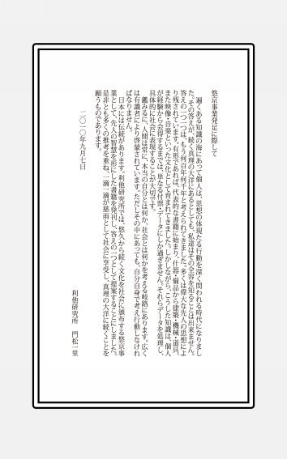

| 「フランダースの犬」解説――風車が燃えた秘密―― | |
| 門松一里 | |
| (2013) | |
「フランダースの犬」解説――風車が燃えた秘密――
門松一里
私たち日本人がベルギーと聞いて何を思い浮かべるでしょうか。ヨーロッパの小国、欧州連合（ＥＵ）の中心......よく知っておられる方なら、チョコレートやベルギーワッフル、ベルギービールなどをあげられるかも知れません（とても美味しいです）。あるいは、美しく輝くダイヤモンドを連想されるかも......。とはいえ、一番有名なのは『フランダースの犬』でしょう。
本書では、書籍『フランダースの犬』から、広くベルギーを紹介したいと思います。
第Ⅰ部では、解説『フランダースの犬』として、原作とアニメの違いや、「どうしてアロアのお父さんは古びた風車を修理しなかったのか？」や「ネロ少年の絵描きとしての才能は？」などの素朴な疑問に、資料をもとに当時の状況や、絵描き（イラストレータ）の学びとその方法について、考えながら答えていくことにします。
「あの火事さえなければ......」と思うのは、とても自然なことですし、私も調べる前までは、どうして修理しないのか疑問でした。でも答えを知ると、皆さんだって絶対に修理なんてしないと思いますよ。コゼツの旦那（アロアのお父さん）は、実はかなり優秀な経営者だったのです。逆にネロ少年はもう少し考えて行動して欲しかったなぁと思います。単に夢を語るだけが青春ではありません。本当の意味での「助ける」「助けられた」とは、どういうことかをルーベンスが語っていたというのに......。
第Ⅱ部では、ベルギーへの誘（いざな）いと題して、キーワードを読み解きながら、ジョークを交えて、小国ベルギーから西ヨーロッパの歴史を覗いてみることにします。
実は、ほとんど知られていませんが、オランダとフランスに挟まれているベルギーは、オランダ発祥の地であり、フランス揺籃（ゆりかご）の地なのです。
気楽にベルギー生まれのフリッツ（※１）でも食べながら、本書を読んで新しくて古い国ベルギーを味わってください♪
※１．フリッツは、フライドポテトのことです。アメリカではフレンチフライ、イギリスではチップスです。
一、本書は、原作『フランダースの犬』（A Dog of Flanders、一八七二年）から、ベルギー王国を紹介しています。ただし、映画やアニメーションなどでの後人が付け足したエピソードは、一部説明はしていますが、ほとんどを割愛もしくは省略しています。
一、底本として、原作はプロジェクト・グーテンベルク（Project Gutenberg）を利用しています。著作権がすでに切れており、誰でも原作に親しめるようにしています。
cf. http://www.gutenberg.org/ebooks/7766
一、日本語訳は、プロジェクト・グーテンベルク版を底本として翻訳しています。
一、才能ある青少年を育成する上で、守護天使となる、ベンチャービジネスに積極的に資金を提供するエンジェル投資家が注意しなければならないことを紹介しています。
一、青少年が行うべき、学びとその方法について、絵描き（イラストレータ）を題材にまとめています。
一、政治・宗教に関しては、言語問題や宗教絵画など必要なもの以外は深く記述していません。これは「助ける」「助けられた」という行為について、深く考えるチャンスを作るためです。
一、調査に関しては、「１．リサーチ（調査）」「２．レファレンスサービス（参考調査）」「３．レフェラルサービス（情報紹介）」として、【数値】としての裏付けを取っています。数値がない場合は言質（げんち、言葉での証拠）を取るようにしています。なお、不明なこと解らないことは、【不明】あるいは【不可解】としています。
一、地名については、日本で馴染み深い英語由来のフランダース（Flanders）やアントワープ（Antwerp）と表記しています。特に指定のない場合は、地域の言葉に準じて表記しています。
一、人名については、日本で親しまれているネロやアロアと表記しています。
一、敬称については、文中で必要な場合を除き、省略しています。
一、アマゾン・キンドル（Amazon Kindle）では、一部の記事や写真・図表のすべてを省略しています。ご了承ください。
【目次】
クリスマスイブの夜、教会の名画の前で静かに眠るネロとパトラッシュ......。悲劇の結末は皆さん知っておられるでしょう。......大好きなアロアに会わせてもらえず、放火を疑われ、仕事を奪われ、唯一の身内だったおじいさんもなくなり、葬儀を終えれば家賃も払えず追い出され、着のみ着のまま最後の希望であるコンクールの発表に向かうも落選。帰る場所もなく、空腹と失意の中でアロアのお父さんの財布を拾い届けるも、避けられているのでそそくさと立ち去り、財布を見つけたパトラッシュだけを飢えないようにと託す。吹雪のなか少年は一人彷徨い、ルーベンスの絵の前へ。追ってきたパトラッシュと抱きあって横になると、突然大きな白い光が二枚の絵を照らし満足するネロ。清々しい朝の光が神の子のイバラの冠を映すころ、人々は後悔の言葉を口にするのでした......。
いつ思い出しても泣いてしまいます（すみません今も目頭が......）。典型的なお泪頂戴話ですが、あまりにかわいそうです。
あまりにかわいそうなので、アメリカでは、ハッピーエンド♪に改変しているそうです。短絡すぎて、それもどうかと思いますが、結末を変えてしまっては、話が違いますからね。シェークスピアの『リア王』のあわれな末娘コーデリアが生き残ったら話になりません。普通でしたら、すべて調べるのですが、この場合は【不可解】要素として割愛します。
ベルギーでは『フランダースの犬』は人気がありません。家も身寄りもない飢えた少年を助けない話が、ベルギー本国で人気があろうはずもありません。ベルギー人にしてみたら、「そんなかわいそうなことはしないよ」でしょう。（ベルギー人でなくても）許せませんからね。
人気がない理由として、そもそもベルギーの言葉で書かれていないことも原因の一つです。ベルギーの方が書いた小説ではありません。ベルギー・フランダースが舞台ですが、英国人ウィーダ（Ouida、一八三九年―一九〇八年）が「英語」で一八七二年に書いたものです。作者ウィーダの話は後述するとして、オランダ語に翻訳された「ベルギー版」の発表は一九八五年です。ベルギーで読まれるようになったのは、つい最近のことなのです。
原作（英文）はかなり短くて、たった一万四千強の単語しかありません。日本語でも、文庫本で六十頁強です（※１）。児童書でも百頁前後ですから、そのまま一作品では（薄すぎて）本にできませんので、作者ウィーダの他の作品と一緒に出版されています。
それに比べてアニメーションは全部で五十二話（※２）あります。アニメは、尺の関係から（話数を合わせるために）原作にないエピソードを、数多く添加しています。
これは別に『フランダースの犬』に限ったことではありません。『母をたずねて三千里』は、イタリアの名作『クオーレ』の一節ですが、原作に「ペッピーノ一座」は登場しません。びっくりするぐらい風呂敷は広がっています。
こうしたことをどうこう言うつもりはありません。多く《演出》で、観客を楽しませるものです。小説とアニメは全くの別物です。当然、舞台や映画やＴＶ・ラジオのドラマなどとも区別すべきで、ロバート・キャパの写真『崩れ落ちる兵士』から映画を作ろうなどというのは無粋な考えです。余韻を味わいましょう。
【写真】『崩れ落ちる兵士』
Falling Soldier（Loyalist Militiaman at the Moment of Death, Cerro Muriano, September 5, 1936）
※アマゾン・キンドル（Amazon Kindle）では、写真・図表を省略しています。ご了承ください。
どうしてか。尺を合わせなければ（間尺に合わないと）、まず商品にならないからです。漫画でも、十六頁・三十二頁とページ数が決まっているのは、印刷紙面によるからです。半端な紙面の数ではロスから、コスト高となってしまって売りの商品価値が下がってしまいます。中身はもちろん大切ですが、きれいに箱に詰めることも商業では重要です（※３）。映画の例ですと、マイケル・チミノ監督の『天国の門』（Heaven's Gate、一九八〇年）は長くなりすぎて、あわれ製作会社を倒産に追い込んでしまいました。同時期のユナイテッド・アーティスツの作品に、フランシス・フォード・コッポラ製作・監督の『地獄の黙示録』（Apocalypse Now、一九七九年）があります。こちらは、ジョゼフ・コンラッド（Joseph Conrad、一八五七年―一九二四年）の小説『闇の奥』（Heart Of Darkness、一九〇二年）（※４）を原作にしていますが、かなり切り刻んで話としては本当に別物に仕上がっています。結果は歴然、周知の通りです。
《アニメと原作の設定の違い》
ネロの描写
【アニメ】金髪碧眼。つまり、青い瞳です。愛らしいですが、美少年とまでは......。
【原 作】金髪は同じですが、黒い瞳です。アルデンヌ（ベルギー南部）生まれの美少年です。
パトラッシュの描写
【アニメ】大型ですが、かわいらしい白い斑犬です。
【原 作】筋肉隆々（ムキムキ）の黄褐色の労働犬です。金物屋に捨てられたのが二才で、拾われてからずっとネロと一緒にいます。犬の十五才として老いの描写があり、ラストでネロを必死に追いかける姿が痛ましいです。
ネロと年齢とパトラッシュとの出会いから過ごした時間
【アニメ】ネロが八・九歳ごろに、痛めつけられているパトラッシュに、ネロが水を与えたのが最初の出会いです。一年間いっしょに過ごしてから、十歳のときに亡くなっています。
【原 作】ネロがパトラッシュに出会ったのは二・三歳のころで、捨てられているのをおじいさんと一緒に発見しました。亡くなるのは十五歳です。つまり一緒にいた時間は、アニメでは一年ですが、原作は十三年ちかく一緒にいるのです。最後の悲劇で、パトラッシュが何も食べずネロを追いかけたのもうなずけます。ずっとふたりは一緒だったのですから。逆にアニメが十歳というのはＧＪ（Good Job、グッジョブ）です。実に絵になります。泣けました。しかし、原作の十五歳の少年では......。ジュール・ヴェルヌ（Jules Verne、一八二八年―一九〇五年）の小説『十五少年漂流記』（Deux Ans de Vacances、一八八八年）でさえ、ネロより幼いです。
ジェハンおじいさん
【アニメ】ネロの絵を、応援しています。
【原 作】享年九十三。記憶はしっかりしています。粗末なベッドに寝たきりになっていても、おじいさんは世間がどんなものかを全て忘れたわけではありませんでした。
村の描写
【アニメ】原作に比べると、やや大きな村です。
【原 作】大小二十軒ほどしかありません。
アロアの描写
【アニメ】亜麻色の髪で、ネロと同じ青い瞳です。
【原 作】亜麻色の髪は同じですが、黒い瞳です。
アロアの衣装
【アニメ】《写真１》アロアは、オランダの民族衣装です。ベルギーの衣装は日本に馴染みがありませんからね。演出です。
【原 作】《写真２》実際のベルギーの衣装です。アニメと比べると、かなり違和感があると思います。
アロアの年齢
【アニメ】年齢は八歳です。幼いです。
【原 作】十二歳......。甘えたで、行動を考えれば幼すぎるきらいがあります。良いとこのお嬢さんではありますが......。
アロアの誕生日
【アニメ】アロアの生まれた日です。原作の聖名祝日は日本では馴染みがありませんので、変えたのでしょう。二回描かれていますが、二回目にネロは呼ばれませんでした。
【原 作】ネロが呼ばれなかったのは、アロアの誕生日ではなくて、聖名祝日です。聖名祝日とは、キリスト教の守護聖人の祝日です。洗礼名をもらった守護聖人の祝日を、自分の誕生日のように祝います。
ネロとアロアの恋愛
【アニメ】ネロとアロアの恋愛話ですが、アニメは幼いこともあり、単に「好き」です。
【原 作】原作ではキスをして「愛している」です。「偉くなれなければ死ぬ」と言うネロに、アロアは「私のことを愛していないのね！」と言っています。アロアちゃん可愛いですね♪
パトラッシュの引き取り
【アニメ】荷車の荷台に乗せています。原作では絵になりませんからね。
【原 作】おじいさんがパトラッシュを家まで引きずって（！）います......。本当ですって。
パトラッシュの目覚め
【アニメ】アロアが目覚めさせました。マリアさま？
【原 作】ネロです。アロアはまだ生まれていません。
パトラッシュの鈴
【アニメ】もとは、亡くなったお母さんがネロに与えたものでした。
【原 作】パトラッシュの首だけではなく、荷車の引き具にもついています。
ヌレットおばさん
【アニメ】ネロの隣に住む親切な老婦人。アヒルのクロ（原作未登場）を飼っています。寄る年波に勝てず、娘のところにご厄介になります。
【原 作】名前のみ。続柄は不明です。ネロが不在のときに、寝たきりになったジェハンおじいさんの介護を何度も手伝っていました。
アヒルのクロ
【アニメ】いたずらなアヒル君。パトラッシュと仲良し。
【原 作】登場せず。
イチゴ飴
【アニメ】アロアの好きな飴で、ネロのお母さんの好物でもありました。
【原 作】登場せず。
ミレーヌとクロード
【アニメ】ヌレットおばさんの娘とその夫です。
【原 作】登場せず。
金物屋
【アニメ】パトラッシュをネタに大金をせしめたり連れ戻しに来たりと、悪役三昧、悲劇の演出です。パトラッシュを子供のころからいじめていました。
【原 作】パトラッシュが二才のときに捨てています。他の犬がいたら失敬しようかというぐらいの悪人です。急いだ市場の祭りで喧嘩をしてあっけなく亡くなっています。アーメン。
コゼツの旦那
【アニメ】ネロの年には、農作物の作り方・牛の育て方・風車の使い方を一生懸命に覚えたという叩き上げです。一人娘のアロアが、貧しいのに働かないネロと遊ぶのが気に入りません。果ては、娘をイギリスに留学させたり、ネロを火事の犯人にしてしまったり......。ですが、ネロに、絵を描くより、おじいさんをいたわるほうが大切なのではと諭してもいます（忠告を聞かなかったネロは薬草を台無しにしてしまいます......）。最後は改心したのですが、遅すぎました。
【原 作】名前はありません。ネロが絵を描くのを知るまでは、交際を黙認していました。絵ばかり描いているネロをサボっていると非難し、避けようとします。この時代の知恵は持ち合わせている常識人です。
アロアのお母さん
【アニメ】エリーナという名前があります。ネロにとても親切です。
【原 作】名前はありません。粉挽屋の奥さんという描写のみです。気弱な女性で、娘の幸せを第一に願っています。
ソフィアとアニー
【アニメ】コゼツの旦那の妹とその娘（アロアの従姉妹）です。
【原 作】登場せず。
絵描き
【アニメ】ネロに絵を教えました。
【原 作】複数います。美少年のネロをモデルに描きました。ただし、ネロに絵を教えていません。ネロも教えてもらおうとしていません。
ジェルジュとポール
【アニメ】ネロの親友です。
【原 作】登場せず。
樵（きこり）のミシェル
【アニメ】年配ですが、疲れ衰えてはいません。ネロを引き取ろうとしていました。まさかネロが絵を見るのに食費を削るとは思いませんでした。
【原 作】名前と描写だけです。老人で、ネロのコンクールの絵のモデルです。その姿には、「疲れ衰えた老いと静かな忍耐とあらあらしい悲しみ深い哀愁」があります。
靴の修理屋
【アニメ】ネロの家の大家で、ハンスという名前があります。悲劇の演出者（トリックスター）です。息子のアンドレ（原作未登場）を、アロアの婿にと考えています。一応、同情心はあります。
【原 作】名前はありません。ネロの家の大家という設定は同一です。コゼツの旦那とは毎週、酒をかわす間柄ですが、冷酷で欲深いお金大好き人間です。家賃の支払えないネロに、家財一式、石ころでさえおいて行けです。
アンドレ
【アニメ】ハンスの息子。気弱。嘘つきは遺伝ですが、性根は優しいです。
【原 作】登場せず。
ノエルじいさん
【アニメ】風車の職人です。ネロの本質を見ています。風車の火事は、コゼツの旦那とハンスの責任だと指摘します。
【原 作】登場せず。
ジェスタス
【アニメ】酪農家。ネロが不憫だと、自分だけは牛乳を運ばせました。
【原 作】登場せず。
アロアのイギリス留学
【アニメ】コゼツの旦那はネロと引き離すために、アロアをイギリスへ留学させます。アロアはさびしくて病気になってしまいます。『アルプスの少女ハイジ』のハイジっぽいです。
【原 作】登場せず。
バートランド
【アニメ】アロアの主治医。アロアの病気の原因を見抜いた先生。『アルプスの少女ハイジ』の医師がモデルでしょう。
【原 作】登場せず。
親切な貴婦人
【アニメ】ネロにルーベンスを教えてくれます。ハンスのせいで、ネロはルーベンスの二枚の絵を見ることができませんでした。
【原 作】アントワープはルーベンスの街であることが詳細に書かれています。ネロでさえ知らないはずはありません。アニメは、日本向けの演出です。
セルジオ
【アニメ】ヌレットおばさんが娘のところに引越したので、ネロの隣人になった野菜商人。野菜を提供してくれるなら、タダで牛乳を運ぶという条件で、ネロの職を奪ってしまいます。
【原 作】登場せず。ネロの職が奪われたのは、アントワープからラバ（※５）を使って牛乳を運ばせる業者が現れたからでした。
ルーベンスの絵画『聖母被昇天』（アントワープの聖母大聖堂にあるマリア像）
【アニメ】ネロがお母さんを思い出す描写があります。ジェハンおじいさんも娘（ネロのお母さん）のために祈っていました。
【原 作】ネロは二歳のときに、アルデンヌ（ベルギー南部）でお母さんと死に別れていますから、アニメのように、アントワープ（ベルギー北部）にそうした思い出はありません。大きくなったネロは『聖母被昇天』に祈りを捧げています。
ネロの夢
【アニメ】当初は、おじいさんの願いもあり、だれにも迷惑にならない自分の土地をもった農夫か樵（きこり）でした。ですが、絵画に目覚めてしまって......。
【原 作】絵描きになることです。そうでもなければ死ぬと宣言しています。
働くよろこび
【アニメ】ミシェルおじさんのところや、波止場などで働いてお金を稼いでいます。
【原 作】絵描きになりたい。それだけです。
画材の購入
【アニメ】人に与えられたりしていますが、自分でも稼いで買っています。
【原 作】日々の食事をへつらせて......。
ネロの絵画技法
【アニメ】遠近法すらできていません。
【原 作】だれも下絵や遠近法・解剖学・陰影法などについてネロに教えてくれる人はいませんでした。
フラン
【アニメ】金貨です。演出です。コゼツの旦那が落とした金貨は二千枚......おそろしいほど重いです。こういうことが物語の時代を、近代っぽく思わせないのでしょうね。
【原 作】紙幣です。ちなみにコゼツの旦那が娘のアロアの絵の対価としてネロに渡そうとした一フランは、銀貨です。ルーベンスの絵の閲覧料も銀貨一枚＝一フランです。
おじいさんの死
【アニメ】アロアの誕生日の前日に、「ネロ、いい絵を描くんだぞ」と言い残して、おじいさんは亡くなります。アロアは自分の誕生日におじいさんの不幸を知ることになりました。
【原 作】原作ではずっと後、火事やコンクール出品の後で、クリスマスの一週間前に静かに亡くなります。絵を描くことに賛成していません。葬儀代で家賃が......悲劇。
風車の火事
【アニメ】かなり大きな火事で、コゼツの旦那も村のみんなも大変でした。
【原 作】アントワープから救援が来たものの、納屋と穀物だけの被害で、保険もおりています。コゼツの旦那がネロを悪者にするのは、おかしな話です。
薬草
【アニメ】パトラッシュを回復させたり、アロアを癒したり、おじいさんの育てた薬草は大活躍です。ただし、ネロの手入れではＮＧだそうです。おじいさん......お金になることはネロに教えてあげてよ......。
【原 作】登場せず。
発表会前日（クリスマスイブイブ）
【アニメ】ルーベンスの絵を五十サンチームもの大金で閲覧します。食費が足りず、ネロは空腹のまま、パトラッシュにだけ食事を与えてあたたかい炉辺で看病します。
【原 作】薪すらありません。ネロとパトラッシュのふたりは寄り添いあたためあいます。
コンクールの絵
【アニメ】おじいさんとパトラッシュです。アニメの絵の表現は大変です。
【原 作】樵のミシェルです。
パトラッシュの老い
【アニメ】ネロが、食べさせようとして、やっと口にするぐらい大変な状態です。コゼツの旦那の財布を届けたときは、アロアの差し出したあたたかいスープを口にすることなく、暖炉の前でしばらく眠っています。
【原 作】老いて、節々の痛みは頂点に達しています。「死ぬまで休むべきではない」とパトラッシュは考えていましたが、と同時に、死期が近づいているのも知っていました。財布を届けた際も、スープや暖炉に見向きもせず、ネロを追おうと戸口から一歩も動こうとしませんでした。お腹は空き切って、体も凍えているというのに、ネロと一緒でなければ要らないのです。
ネロの捜索
【アニメ】改心したコゼツの旦那の願いから、すぐに捜索しています。アロアの絶叫......。
【原 作】改心したアロアのお父さん（コゼツの旦那）でさえ、どうやったらネロと仲良くなれるか悩んではいますが（家を追い出されたことなど知りませんから）、「明日になったら迎えに行こう」とのんびりしています。アロアは無邪気にはしゃいでばかり......。
ネロの書き置き
【アニメ】家賃のことをハンスに謝っています。原作では取られてしまった家財一式を、足らずにと差し出しています。
【原 作】読み書きできませんから、ありません。
ネロの読み書き
【アニメ】アロアがイギリスに留学に行くことを知って、ジェハンおじいさんから習っています。
【原 作】習っていないので、読み書きできません。コゼツの旦那の財布の文字は読めましたが......。
ジェハンおじいさんの読み書き
【アニメ】できます。
【原 作】記載がありません。
アロアの読み書き
【アニメ】最初はできませんでしたが、イギリスに留学に行きます。病気で帰ってきてからは、アントワープの学校に通っていますので、読み書きできます。
【原 作】記載がありません。原作のウィーダも女性ですし、それなりの教養はあっても不思議ではありません。
ネロの死観
【アニメ】どうしようもなくなって、夢遊病のように教会に辿り着き、亡くなっています。
【原 作】ネロは「偉くなれなければ死ぬ」という決意を、はっきり表明しています。パトラッシュを風車の家に残したときに、飢え死にという「自殺」を選んでいます。
ルーベンスの『キリスト昇架』と『キリスト降架』（アントワープの聖母大聖堂にある被われた二枚の絵）
【アニメ】ラスト、なぜか幕が引き上げられています。教会の灯火で見ています。
【原 作】ネロが（無断で）引き下ろしています。「突然、大きな白い光が、二枚の絵を照らしました」とあるので、偶然、見ています。
ラスト
【アニメ】流石に、アニメで少年の「自殺」は放映できないですし、スポンサーのカルピス株式会社土倉冨士雄社長（当時）の意見から「帰天（召天）」されることになりました。ＧＪ（Good Job）、あの絵は泣けます。
【原 作】残された人々が後悔を口にします。ネロとパトラッシュのふたりは離ればなれになることなく、特別の御恵みを得て、一緒に埋葬されました。
次からは、原作をふまえて、登場人物からのリサーチ（調査）をしてみましょう。
※１．日本とは、数え方が違うので、おもしろいのですが、英文は単語（words）で数えます。日本語は（原稿用紙などの）枚数で数えます。これは、英文一単語につきいくらと著述料を支払っていたからです。日本では一頁いくら（一行いくら）となります。
※２．ここでは日本アニメーション版をもとに記述しています。フジテレビ系日本アニメーション版『フランダースの犬』は全五十二話。日本テレビ系東京ムービー新社版『フランダースの犬 ぼくのパトラッシュ』は全二十四話。
※３．漫画でも、人気上昇で作品が長く続けば、本にするときに後ろに小作品をつけることができます。有名になれば（初期）作品集としてさまざまな作品を収録することができます。
※４．『闇の奥』はベトナムの話ではありません。コンゴ川を遡る話です。当時のコンゴ自由国（一八八五年―一九〇八年）はベルギー国王レオポルド二世の私有地で、後のベルギー領コンゴ（一九〇八年―一九六〇年）です。一九一五年に良質のウランが発見されました。
※５．ラバ（騾馬）は雄ロバと雌馬の子です。
ネロとパトラッシュは、寂しい身の上でこの世に残されました。
かれらは兄弟より深い絆の友情で結ばれていました。ネロはアルデンヌ（※１）生まれの少年で、パトラッシュはフランダース生まれの大きな犬です。かれらは同い年で、重ねた年月は同じでしたが、一方がまだ若いのに、もう一方はすでに年老いていました。かれらはその生涯のほとんどを一緒に暮らしましたが、ふたりとも孤児で貧乏で、同じ手に委ねられていました。強い絆も最初は同情でしたが、ふたりが大きくなるにつれ、日に日に深まり、強く、離れられないように、お互いに深く愛しあうようになったのでした。
かれらの家は、村はずれの小さな小屋でした。アントワープから五キロほどに、フランダースの小さな村はありました。あたりは見渡すかぎり牧場と麦畑です。平野によこたう大きな運河の岸辺にはポプラやハンノキの並木がそよ風にゆらいでいました。小さな村でしたから大小二十軒ほどしかありません。よろい戸は新緑や水色に塗られ、屋根はバラ色か白か黒、白壁は陽があたると雪のように白く輝くのでした。
村の中央の、苔むした小高い斜面に風車がありました。もともとは緋色（真っ赤）に染められていたのですが、それはもう半世紀かもっと昔にナポレオンの兵士のために麦を引いたころでした。いまではすっかり色あせてしまい、病んだ年寄りのように、ときおりぎくしゃく動いていました。風車の向かいには、小さな灰色の教会がありました。
朝昼晩と、教会の悲しげな鐘の音が、海のような緑の平原に響いていました。潮の満ち引きもない海原のつづく北東にはアントワープの聖母大聖堂の塔が見えています。
一緒に住んでいるジェハン・ダースおじいさんは、若いころは兵士でしたので、戦争が、さながら雄牛が畦（あぜ）を踏み潰すように国を蹂躙（じゅうりん）したことを覚えていました。持って帰ってこられたものといえば、不自由な足だけでした。おじいさんが八十歳のときに、アルデンヌにいた娘が亡くなり、二歳になるネロを引き取りました。とても貧乏で、一人が食べるだけでもやっとでしたが、忘れ形見です。ニコラスをかわいらしくネロと呼び、とてもとても大切に育てました。二人は恐ろしいほど貧乏で、食卓に何もないときもありました。けれども、おじいさんは親切で優しく、ネロは美しく、無邪気で正直でした。
二人にとってかけがえのないもの、それがパトラッシュでした。黄褐色のフランダースの犬は大きく、力強い体は親譲りの厳しい労働で鍛え上げられたものでした。このパトラッシュがいなければ、傷痍老人と幼子だけでは生きていくことは出来なかったでしょう。パトラッシュの家系は、何世紀ものあいだ奴隷でした。あわれに使役され、力尽きれば路上に捨てられる運命でした。パトラッシュが二人に助けられたのは、やはり主人に捨てられていたからでした。幸い、前の主人が市場に急ぐあまり鞭打ち、きちんと休息を与えなかっただけなので、元気になることが出来ました。パトラッシュは死ぬまで感謝を忘れることはありませんでした。
おじいさんの仕事は、近くの牧場主の牛乳をアントワープまで運ぶことでしたが、八十三歳になった身体には重すぎる労働でした。パトラッシュは恩返しにと運ぶのでした。そうそうパトラッシュの前の主人ですが、市場の祭りで喧嘩をして殺されたのだそうです。
それから二・三年も経ったころ、おじいさんは傷の上にリュウマチになってしまいました。しかしその頃には、ネロも六つになっていて、おじいさんの代わりが出来るようになっていました。
ネロはとても美しい少年でした。ルーベンスの名画から抜け出してきたかのようなやわらかい、それでいて荘重な無邪気で楽しげな表情に、多くの画家がモデルに描いたのでした。
思えばこの頃がふたりにとって一番楽しい時期でした。村にあるものといったら丘の古びた風車と教会ぐらいでした。見渡すかぎりの牧場と農園、運河の岸の並木、荷渡り舟が緑の樽を積み旗をたなびかせ、静かにすべりゆく......。
パトラッシュの唯一の悩みといえば、ときおりネロがアントワープの聖母大聖堂の前でいなくなることでした。実は、ネロはルーベンスの二枚の絵画『キリスト昇架』と『キリスト降架』を見ようと願っていたのでした。しかし幕をあけ見るためにはお代が必要です。今日の煮炊きの薪にも困る少年に支払うことなどできません。ネロは心に絵を思い描き、ルーベンスの『聖母被昇天』の前にひざまずくのでした。貧乏のどん底で、運命に翻弄（ほんろう）され、文字も教えられず、人に認められないネロに与えられた償いが、その天才でした。あるいは呪いなのかもしれませんが......。ネロの心絵の素晴らしさは誰一人、知りませんでした。ときおり石の上にチョークで動植物を描くときのネロの瞳の輝きを知っているのはパトラッシュだけでした。
そうこうするうちに、おじいさんが寝たきりになってしまいました。おじいさんの夢は、ネロが猫の額でもいいから自分の畑を持って、皆から旦那と呼ばれるようになることでした。それはこの辺りの百姓に共通した願いであり、若くして世界を彷徨い、何一つ財産を作れず命一つ傷一つだけで帰ってきたおじいさんの切なる願いでした。
しかし、ネロのうちには、過去にはルーベンスやヨルダーンス、ファン・アイク兄弟といった素晴らしい芸術家を生み出し、現代ではマース川がディジョンの古い城壁を洗う緑のアルデンヌ地方に、パトロクロス（※２）を描いた大画家を生み出したのと、同じ息吹があったのです。もっとも、その天賦の才は私たちの時代に近すぎて、適切に判断しにくいものなのです。
ネロは、パトラッシュ以外に、もう一人にだけは夢を語っていました。あの丘の古びた風車の家のアロアというお嬢さんです。アロアのお父さんは、コゼツの旦那と呼ばれる粉挽屋で、村一番のお金持ちでした。アロアは愛らしい黒い瞳をしていました。スペイン統治の名残から、フランダースには黒い瞳の人が多いのです。
幼いアロアは、ネロとパトラッシュといつも一緒でした。野原で遊んだり、雪の中を駆けっこしたり、ひな菊やビルベリーを摘んだりしました。古い灰色の教会にも一緒に行きました。風車の家の暖炉の前では、いつも一緒に座るのでした。
かわいらしいアロアに兄弟や姉妹はいませんでしたから、実際、村で一番裕福な子供でした。青い綾織のドレスには、穴の一つもあいたことはありませんでした。祭日ともなれば、金紙に包まれた木の実や、神の小羊の砂糖菓子を両手いっぱいにするのでした。初めてミサに出席したときには、亜麻色の髪に豪華なメクリン・レースの帽子をいただいていました。それはアロアの祖母から母へ、母から娘のアロアに受け継がれたものでした。アロアはまだ十二でしたが、もうお嫁さんに欲しいという話でもちきりでした。しかし、亜麻色の髪の少女は財産なんかにぜんぜん興味がありませんでした。村はずれのジェハン・ダースおじいさんの孫と犬が大好きだったのです。
コゼツの旦那と呼ばれるアロアのお父さんは、善人でしたがいささか厳格でした。ある日、コゼツの旦那は、製粉場の裏の、ちょうど二番刈りのおえた細長い牧場で、かわいらしい一行を目にしました。干草の中に座っているのは自分の小さな娘で、パトラッシュの大きな黄褐色の頭を膝にのせていました。ふたりとも、ケシや青い矢車菊の花輪を、幾重にも首にかけていました。そんなふたりをネロが、磨いた松の板切れに木炭で写生しているのでした。アロアの肖像画に粉挽屋は泪しました。それほど娘を愛していたのです。お母さんの用事はどうしたのだとアロアを叱りつけ帰したあとに、ネロの手から板を取りあげました。
「こんなバカげたことをやっているのか？」
と聞きましたが、その声はわなわなと震えていました。
ネロは赤くなり、うなだれました。
「ぼくは目に見えるものはなんでも描くんです」
とつぶやきました。
粉挽屋は黙っていましたが、一フランをさし出しました。
「それがバカなことだと言うんだ。いいか、時間のムダだと言ったんだ。そうはいってもアロアによく似ているから、うちのも喜ぶだろう。この銀貨をやるから、絵をおいていきなさい」
若いアルデンヌ生まれの少年の顔から血の気がひきました。顔を上げると、両手を後ろにやりました。
「とっておいてください。絵もご一緒にどうぞ、コゼツの旦那」ネロはただそう言いました。「いつも良くしてもらっていますから」
そしてパトラッシュを呼んで原っぱを横切りました。
「あの一フランであれが見られたのになぁ......」ネロはパトラッシュにつぶやきました。「彼女の絵を売るなんてことはできないもの......たとえあれのためでもね」
コゼツの旦那は、とても心を悩ませながら製粉場に入りました。
「あの子を、アロアに近づけさせるんじゃない」その夜に奥さんに言いつけました。「このさき面倒になるやもしれん。あの子も今じゃ十五だし、うちの子も十二だ。それにあの少年はハンサムだし格好も良いからな」
「それにあの子は良い子ですし誠実ですよ」奥さんは暖炉の上にある松の板切れに目を細めました。樫の鳩時計とロウソクのキリスト十字架像の間におかれたアロアの肖像画です。
「あぁそれには異論ない」と、粉挽屋は酒を飲み干しました。
「じゃあどうして......」奥さんはためらいがちに言いました。「もしそうなったとしても二人が暮らしていくには余裕もありますし、幸せが何よりです」
「お前は女だな」粉挽屋はパイプをテーブルに叩きつけました。「あの子には何もない。乞食じゃないにしろ、絵描きの絵空事だ。乞食より始末がわるい。今後、二人を一緒にさせるじゃないぞ。そうでもないなら聖心会の修道院にいれてしまうからな」
あわれな奥さんは震えあがり、約束しました。とはいっても娘から大好きな遊び友だちを引き離すことはためらわれました。コゼツの旦那も、貧しいだけの罪なき少年に残酷をねがったわけではありません。しかし方法がないわけではありません。
ネロは、誇り高くおとなしい感受性豊かな少年でしたから、すぐに傷つきました。古い風車の家には近づかないようにしました。ネロは、コゼツの旦那が怒ったのは、アロアの肖像画を書いたせいだと考えていました。ネロはアロアに、自分と一緒にいるとアロアが怠け者になってしまうから、お父さんが心配している......お父さんがアロアを愛しているからなんだと言いました。
アロアは泣いていましたが、コゼツの旦那の決心は強くなるばかりです。
「これで良いんだ。あの子はまったく乞食同然だ。おまけに完全に怠けている。バカが夢を見ているにすぎん。何時なんどき災いがふってくるやも知れん」
当時の知恵から粉挽屋の門は、あらたまったとき以外は閉じられたのでした。
それでも暖炉の上には、樫の鳩時計とロウソクのキリスト十字架像の間におかれたアロアの肖像画がありました。
描いた板切れだけが優遇されることにネロはさびしくなりましたが、口にするようなことはしませんでした。おじいさんが日ごろから、こう言い聞かせていたからです。
「わしらは貧乏人だ。神の御恵みは、受け入れるしかないのだよ......良いも悪いもな。貧乏人には選択権がないのだよ」
少年は、年老いた祖父を敬い、いつも静かに聞いていました。しかし、少年の天才は、ふわふわとした甘い希望のように、彼の心にささやくのでした。
「でも、貧乏人でも時には選べるんだ......偉くなりさえすれば。いやとは言えないぐらいになれば」ネロは無垢にもそう信じ続けていました。
ある日、ネロが運河のそばでたたずんでいると、偶然見つけたアロアはネロに駆け寄りきつく抱きしめました。アロアの聖名祝日（※３）にネロを呼んではいけないと言われたからでした。ネロはアロアにキスをして自分の信念をささやきました。
「こんなこといつまでも続かないよ、アロア。いつか、君のお父さんが持っている松の板切れを、同じだけの銀の価値にしてみせる。そうなれば、お父さんだってぼくを締め出したりはしない。ずっとぼくを愛していてくれ、愛しいアロア、いつまでもぼくを愛していてくれ、ぼくは偉くなる」
「私が愛さなかったら？」
「それでもぼくは偉くなる。偉くなるか、そうでもなきゃ死ぬよ、アロア」
「私のこと愛してないんだわ！」
甘えたのアロアは、ネロを押しのけました。
アロアと別れたネロは夢の続きをこう考えるのでした。......今にきっと幸福になれる時が来る。有名になって故郷に帰れば、アロアの家の人も機嫌を直すどころか喜んで迎え入れてくれるだろう。村の人たちも、昔のあわれさから立派になった姿を一目見ようと集まってくるだろう。そして、おじいさんには新しい服を買ってあげて肖像画を描いてあげよう。パトラッシュには金の首輪をつけてあげて、集まってくる人には「前はこの犬だけがたったひとりの友だちだったのです」と言おう。アントワープの聖母大聖堂が見える丘に宮殿のような家に住もう。貧乏でさびしいけれど大きな望みを持っている少年を集めて、明るく楽しい生活を与えたい。彼らをはげまし、もし彼らが自分に感謝するようなことがあれば、「ルーベンスに感謝しなさい」と言おう。「もしルーベンスがいなかったら、私は何にもなれなかったのだから」と。
美しい夢でした。実現不可能なそれでいて無垢な私利私欲のない英雄崇拝の夢をもつネロでしたから、アロアの聖名祝日がきても、いつものように幸福でした。
楽しむ人々をよそに、ネロは未来を信じていました。経験あるパトラッシュは、そんなあてにならない未来は、今日の風車の家のごちそうのかわりにはならないことを知っていました。それからというものコゼツの旦那を見かけるたびにうめき声をあげるのでした。
その晩、おじいさんは、今日がアロアの聖名祝日だったので、ネロにどうして行かないのか訊ねました。
少年は、年老いた男の記憶が正確ではなく、少しぐらい間違っていてくれたらと思いました。
ネロは正直に、コゼツの旦那に呼ばれなかったことを言いました。避けられていることも。
「だが、何ひとつ悪いことはしなかったのだろう？」
「ぼくの知っているかぎりは......何も。アロアの絵を松の板切れに描いたこと。それだけです」
「おぉ！」
年老いた男は黙りこんでしまいました。少年の無垢な答えから、真実を知ったからでした。陋巷（※４）のうちに、粗末なベッドに寝たきりになっていても、おじいさんは世間がどんなものかを全て忘れたわけではありませんでした。
おじいさんはネロを抱き寄せ、いまさらながら貧乏であることを言って聞かせるのでした。
しかし、ネロは自分には何ものにも勝る財産があると思っていました。王様の権力より偉大な力を、無垢にも信じていたのです。
風車の家の窓にはまだ灯がありました。ネロの頬を泪がつたいます。まだほんの少年なのです。しかし彼は微笑み、「いつか！」と独り言をいいました。やがて窓の灯も消えました。ネロはパトラッシュと一緒にならんで深い眠りについたのでした。
ネロには、パトラッシュしか知らない秘密がありました。小屋の外にある納屋には北からの光がふんだんに入ってきます。お手製の粗末なイーゼルにかかげた大きな灰色の紙に、頭にうかぶ無数のイメージの一つを描きだしました。だれに教わるでもなく、絵の具を買うお金もありませんでした。粗末な画材でさえ、なんどもなんども食事をがまんして買ったものでした。使える色は、白と黒だけです。描いたのは、倒れた木に腰をおろしている一人の老人、それだけでした。ネロは、樵（きこり）のミシェル翁が夕暮れにそうして座っているのを何度も見ていました。だれも下絵や遠近法・解剖学・陰影法などについてネロに教えてくれる人はいませんでした。それでもネロは、疲れ衰えた老いと静かな忍耐とあらあらしい悲しみ深い哀愁を、あますところなく描きだしていました。夕闇せまる刻に朽ちた木に座る一人の老人の姿を、一葉の詩にしたのでした。
それは未熟そのもので、言わせてもらうなら多くの欠点がありました。しかし、それは現実でした。自然でした。芸術でした。哀愁漂う一種の美がありました。
アントワープはルーベンスの街と言われるだけに、絵画コンクールがありました。十八歳未満の少年には、身分に関係なく二百フランもの賞金が出るのです。ネロはこれに賭け、一年経かりで絵を仕上げたのでした。
誰にも内緒にしていましたが、パトラッシュにだけは、「ルーベンスが知っていたら、きっと入賞させてくれるよ」と囁くのでした。
発表は十二月二十四日でした。入賞者が、家族と一緒に喜びをわかちあうためです。
冬の厳しさはつのるばかり。それにもまして、パトラッシュの老いが進んでいました。節々の痛みは頂点に達していました。力強くなったネロがもういいと止めても、パトラッシュは頑として荷を担うのでした。
「死ぬまで休むべきではない」とパトラッシュは考えていました。しかしその休む時もそう遠い先のことではないことも知っていました。
ある日の午後、ネロはかわいらしい人形を拾いました。運命に見放された偉人とちがい、傷もありませんでした。持ち主を探したのですが、どうしても見つかりません。そこでアロアにあげようと思いました。風車の家にもどるころには、すっかり夜になっていましたが、アロアの部屋は知っていたので、部屋の窓からプレゼントしました。
そういう時に限って何かあるものです。風車の家が火事になったのです。幸い、納屋と小麦がいっぱい焼けてしまいましたが、風車も母屋も無事でした。アントワープから消防車が何台もやってきました。粉挽屋は保険に入っていたので、何一つ損はありませんでした。無事解決かと思われましたが、コゼツの旦那は腹の虫がおさまりません。「偶然じゃない、誰かが計画したのだ」と言うのでした。
目覚めたネロも駆けつけました。コゼツの旦那はネロを追い払いました。昨夜見かけたネロを犯人扱いです。
この日から、いままで親切だった村人もネロに距離を置くようになりました。だれも粉挽屋の言うことなど信じてはいませんでしたが、何しろ村の有力者です。娘アロアの財産も魅力的でしたので、逆らうことなどできません。これには粉挽屋の奥さんも同情しました。そんな大それたことをするような子ではない、と。しかし主人も一度口にしてしまった以上、押し通さざるをえませんでした。
ネロはとても悲しかったのですが、入賞さえすれば変わると思っていました。物事をこうも簡単に考えるのは、幼いころからみんなにかわいがられ、褒められて育ったからです。急に世間の風が変わったことへの戸惑いの裏返しと言えるでしょう。
クリスマスが近づくというのに食卓に何も並ばない日が続きました。追い打ちをかけるように、アントワープからラバ（※５）を使って牛乳を運ばせる業者が現れたからでした。パトラッシュの荷は軽くなりましたが、ネロの財布も少なくなったのでした。
クリスマスが近づくころには、天候は荒れ、雪が二メートルも積もり、氷がいたるところにできました。
ネロとパトラッシュはとうとう二人きりになってしまいました。クリスマスの一週間前におじいさんが亡くなってしまったのです。身寄りもない少年に、粉挽屋の奥さんも、主人もあわれむだろうと思いましたが、コゼツの旦那はお悔やみの一つも口にしませんでした。
収入は減り、家賃も滞納している上に、葬儀代です。すっからかんでした。大家の靴の修理屋は、コゼツの旦那と毎週、酒をかわす間柄でした。お願いに行きましたが、靴の修理屋は、冷酷で欲深いお金大好き人間でした。明日には出て行けです。それも滞納分、家財一式、石ころでさえおいて行け、でした。
その夜、思い出がつまった家の、火のない炉辺で、ふたりは寄り添いあたためあいました。体は寒くありませんでしたが、心は寒々としたものでした。
やがて朝になりました。クリスマスイブ。懐かしい小屋を後に、二度と帰らぬようにアントワープに向かいました。そう、コンクールの発表日です。
昨日の朝から何も口にしていません。せめて老いたパトラッシュにだけはと、前に親しくしていた家を訪ねますが、麦が高くなったと言われるばかり。二度と人に乞いませんでした。
ネロは着のみ着のまま、古い木靴だけ。売るものもありません。パトラッシュにはそれが解っていたので、私のことは心配しないでと、ネロの手に鼻をこすりつけるのでした。
コンクールの発表は正午です。庁舎にむかいました。階段や入口にも、若者が大勢いました。ネロと同い年ぐらいもいれば、もっと年上の人もいましたが、みんな親や親類や友だちと一緒でした。ネロはパトラッシュを引き寄せました。不安で気分が悪くなりました。
十二時の鐘の音が割れんばかりに鳴り響きました。扉が開かれ、人が流れこみます。入賞作品が壇上にかかげられるのです。
ネロの視界に靄（もや）がかかり、頭がグラグラしました。手足がいうことをききません。視界が晴れたとき、彼は高くかかげられた絵を見ました。彼の絵ではありませんでした！
気づいたときには、ネロは外の石畳の上に倒れていました。パトラッシュが懸命に息を吹き返させようとあらゆる手をつかっていました。遠く成功者の群れがすぎゆきます。
ネロはふらふらと立ち上がり、パトラッシュを抱き寄せました。
「ぜんぶ終わったよ、パトラッシュ。ぜんぶ終わったんだ」
降りしきる雪と容赦ない北風は、平原では死ぬほどの辛さでした。通いなれた道でしたが、気力体力の尽きようとしていたふたりには、遠く時間の経かるものでした。四時の鐘の音が聞こえたとき、パトラッシュが急に立ち止まりました。何かを見つけたようです。茶色の革袋でした。
そこに小さなキリストの十字架像がありました。ほのかなランプが灯っています。少年は機械的にかざしてみました。コゼツの旦那の名前がありました。中にはお札が二千フラン。
ようやくネロの頭もはっきりしました。シャツに押し込むと、パトラッシュをなでて、先にひきました。犬はなにか言いたげに顔をあげるのでした。
ネロが風車の家につくと、粉挽屋の奥さんが泣いていました。小さなアロアがスカートにしがみついています。奥さんは、主人に見つかると大変だからとネロを帰そうとしました。奥さんは、破産同然になってしまった、あなたにした天罰だ、となげくばかりです。
ネロは、財布を手渡すと、財布を見つけたパトラッシュだけでもと願い託します。パトラッシュにキスをしたあと、後を追わないようにすぐに戸を閉ざしました。
外は猛吹雪です。奥さんもアロアもネロを追うことなどできません。
やがて傷心したコゼツが帰宅しました。疲れ切って絶望を口にします。奥さんが財布を渡し、ネロのことを話すと、コゼツは震えながら、恥ずかしさとおそれから顔を覆いました。
アロアが明日のクリスマスにネロを呼んでもいいのか聞きました。すっかり改心したコゼツはいつでも来てもらいなさいと答えました。そう、ネロの帰る家がないことをだれも知らないのです。
パトラッシュはネロを追おうとしていました。アロアの差し出すクリスマスのご馳走にも見向きもしません。暖炉にも興味ないように戸口を見ています。お腹は空き切って、体も凍えているというのに、ネロと一緒でなければ要らないのです。
これにはコゼツも感心しました。明日の朝には迎えに行くことを決めました。
そう、ネロがひとり死を選んだことを見通せるものなど、パトラッシュしかいなかったのです。
アロアは無邪気に、明日はどうやって久しぶりにネロと遊ぼうかと考えていました。コゼツはそうした娘を見て、胸がいっぱいになりながら、娘の友だちとどうやって仲直りするかを考えていました。奥さんは、満ち足りた表情で糸車の側に座りました。
来客がアロアに贈り物をわたした一瞬に、パトラッシュは隙を見て表に飛び出しました。
吹雪は止むことを知りません。パトラッシュは匂いをたどり、消えては迷い、また見つけ追いかけました。もうどれだけ繰り返したことでしょう。
やっと二人が再会したのは、ルーベンスの絵の前でした。
しっかりとネロはもう放すまいとパトラッシュを強く抱きしめました。二人はしびれる寒さと空腹から、やがて気が遠くなり、うっとりとなってきました。
争うことを知らない二人に、楽しかった思い出が走馬灯のように流れます。
突然、大きな白い光が、二枚の絵を照らしました。絵を包んでいた被いは少年が取っていたのです。『キリスト昇架』と『キリスト降架』の絵を目にすることができたネロは満足でした。
夜が明けて、二人が冷たくなっているのが発見されました。清々しい朝の光が、神の子のイバラの冠を映しています。
頑固そうな年老いた人が泣きながら語りました。
「何とつらい仕打ちをしてしまったのだろう。罪滅ぼしを考えていたのに......財産の半分もやったろうに......婿（むこ）になるべきはずだったのに......」
世界的に有名な画家が語りました。描き方も考え方も自由に受け入れる方でした。「きのう賞を取るべきだった人を探しているのだが......少年には、たぐいまれな見込みと天才があった。夕暮れどきの倒れた木の上に座る老人......テーマはこれだけだったが、その中に偉大な将来性があったのだ。私は、ぜひこの少年を見つけ出し、引き取って絵を教えたいのだ」
巻き毛の麗しい少女が父の腕にすがり声をつなげるのでした。
「クリスマスどころかいつまでいたってかまわないって。パトラッシュもうれしいでしょう。ネロ、起きてよ！」
しかし、蒼白の若顔は偉大なルーベンスの光明を見上げ、やわらかな笑みをたたえた口許は、彼らすべてに「もう遅いんだ」と答えるだけでした。
美しい荘厳な鐘の音が氷結をやぶり、日の光がたおやかに雪原を輝かせました。人々は陽気に楽しそうに通りを行き交っていました。ですがネロとパトラッシュは、もうそうした人々の手に慈悲を願うことはありませんでした。必要としているすべてを、いまやアントワープ自らが与えたのです。
死はふたりにとって、長く生きるより情け深いものでした。報いられることのない愛の世界、実現しない信心の世界から、愛に報いた犬と無垢に信じる少年を、解き放ったのですから。
生涯ふたりは一緒に過ごし、死んだ後も離ればなれになることはありませんでした。なぜなら少年の腕がしっかり犬を抱いているので、無理に離せないことがわかりましたし、恥じた村人たちが特別の御恵みを得て、このふたりを一つの墓に納めて抱き合うように眠らせたからでした。永遠に！
※１．アルデンヌは、フランス北東部からベルギー南部の風光明媚な丘陵地帯です。森林や渓谷は美しく、ベネルクス随一の観光地です。
※２．パトロクロスは、ギリシア神話の英雄アキレスの部下であり、親友です。トロイア戦争で、戦えば死ぬと予言されていた英雄のかわりに戦いましたが、討たれてしまいます。結局アキレスは出陣し、有名なアキレス腱を射られ倒されてしまうのです。
※３．聖名祝日は、キリスト教の守護聖人の祝日。洗礼名をもらった守護聖人の祝日を、自分の誕生日のように祝います。
※４．陋巷（ろうこう）は、狭くきたない町です。
「賢哉回也。一簞食、一瓢飲、在陋巷。人不堪其憂、回也不改其樂。賢哉回也」『論語』雍也
※５．ラバ（騾馬）は雄ロバと雌馬の子です。逆に、雄馬と雌ロバの子はケッテイ （ 駃 騠 ）ですが、一般的ではありません。
原作から登場人物を、リサーチ（調査）してみましょう。☆マークは五段階評価です。
ネロ（享年十五）
《本名》ニコラス・ダース（Nicolas Daas）
《通称》ネロ（Nello）
【身体】☆☆☆☆☆
【精神】☆☆
【経済】
【目標】
【総合】☆
【身体】アルデンヌ生まれの美少年。金髪黒瞳で、ハンサムでかっこうも良いです。幼いころは多くの画家のモデルにもなっています。
【精神】良いように言えば無罪・無邪気・素直、言い変えれば......。ともかく善人です。嘘も言えません。放火もしません。拾った財布も届けます。何度も言いますが善人です。ですから夭折（※１）してしまいます。イノセンス（innocence）......。
【経済】画家になるべく、祖父から引き継いだ牛乳運搬で糊口をしのいでいました（※２）が、新規業者の参入で、締め出しを食らってしまいました。結果、家賃を滞納してしまい、食費もままならず......。緑の荷車が唯一の財産です。パトラッシュ、リンリン。
【目標】夢は大きく限りなく。自分のような貧しくとも大きな夢を持っている少年を育英することです。ただし、かなり荒唐無稽......無計画すぎます。
【総合】物語は、ベルギー北部のフランダースが舞台ですが、一人だけベルギー南部のアルデンヌ生まれです。ネロが二歳のときに、お母さんがアルデンヌのスタヴロ（ベルギー南東部）近くで亡くなったので、おじいさんに引き取られました。記載はありませんが、ネロは金髪ですから、お父さんはアルデンヌの方でしょう。つまりハーフです。《ここ重要です！》
「善人は早く死ぬ」「絵では食えない」という典型的な例です。
主役なのに、評価は低いです......。十九世紀後半であっても、十五歳で自立もできていない（しようとしていない）点で、かなり厳しいです。コゼツの旦那（アロアのお父さん）から避けられるのも納得です。
確かに絵画に関しての天才はありますが、誰も知らないと言う悲劇。牛乳運搬人が天才画家になるというのは、にわかに信じ難いことではあります。
《一言》勝手に思い込んで、勝手に死ぬなよ。すべきことはあったろうに。残されたアロアはどうするの？ 自殺反対！
パトラッシュ（享年十五）
《本名》パトラッシュ（Patrasche）
【身体】☆
【精神】☆☆☆☆☆
【経済】
【目標】☆☆☆
【総合】☆☆☆
【身体】親譲りの屈強な体ですが、老いが進んでいます。壮年であれば星五つです。
【精神】タフです。ネロと一緒でなければ、どんなに飢えていても食べませんし、冷えた体を暖炉で温めようともしません。ハードボイルド・ドッグ。
【経済】哀しいです。
【目標】助けられた恩返しです。鞭打たれず適度な休息を与えてくれる環境は至福です。
【総合】題名からして、パトラッシュが主人公です。原作もパトラッシュの目線で描かれています。従って悲劇的な結末は避けることができないとも言えます。
《一言》反則だろうが、ちょっとでも食べてから助けに行け。ネロ引きずって来い！
おじいさん（享年九十三）
《本名》ジェハン・ダース（Jehan Daas）
【身体】☆
【精神】☆☆☆
【経済】
【目標】☆
【総合】☆☆
【身体】元軍人。傷痍から足に不具合が残っています。ネロの身体的タフさは祖父譲りでしょう。若いころは美しくといった表現がありませんので、ネロの美しさは（奥さんか）、ネロのお父さんによるものでしょう。
【精神】あきらめの心。『旧約聖書』のヨブ（※３）のようです。
【経済】山上憶良の『貧窮問答歌』（※４）そのものです。哀しいです。
【目標】ネロが、猫の額でもいいから自分の畑を持って、皆から旦那と呼ばれるようになることです。この辺りの百姓に共通した願いであり、若くして出稼ぎに行き、何一つ財産を作れず命一つ傷一つだけで帰ってきたおじいさんの切なる願いでした。
【総合】かなり長寿（※５）です。ほとんど何も口にしていない時期もありましたが、長生きでした。九十三歳という年齢換算は、おじいさんが八十歳のときにネロを二歳で引き取り、ネロが十五歳の年に亡くなったからです。
もうあと一週間、生きていれば、ネロも死なずにすみました。
典型的な「平和の君主」です。「平和の君主」に関しては後述します。
《一言》ジャン・ヴァルジャン（※６）を見習え。故にあちらはハッピーエンドである。
アロア（十二歳）
《本名》アロア・コゼツ（Alois Cogez）
【身体】☆☆☆
【精神】☆
【経済】☆☆☆☆☆
【目標】☆☆
【総合】☆☆
【身体】愛らしい黒い瞳の、亜麻色の髪の少女です。贅沢な衣装から、見るからにお金持ちのお嬢さんです。
【精神】幼いです。典型的な甘やかされたお嬢さん。ネロに会えず泣いたり、ネロの気を引くためにスネてみたりと、かわいいかぎり。
【経済】財産のことなど全く考えたことがないぐらい裕福な暮らし。
【目標】ネロと一緒にいること。ネロと一緒にいること。ネロと一緒にいること。
【総合】幼すぎます。悲劇にむかうにはこれぐらいが必要だったのかと思いますが、甘やかされるとこうなるものなのかしらん。
《一言》明日じゃなくて、今！ 親父を引っ立ててネロを迎えに行かせろ！
コゼツの旦那
《本名》ファーストネームは不明。コゼツの旦那（Baas Cogez）※７
【身体】☆☆☆☆
【精神】☆☆☆☆
【経済】☆☆☆☆☆
【目標】☆☆☆☆☆
【総合】☆☆☆☆
【身体】製粉場に出入りして現役で働いていますから、傷病はありません。健康です。
【精神】やや厳格すぎますが、しかし、当時の知恵は持ち合わせている常識人です。改心したあとは本来の実直な性格になりました。クリスマス・キャロルですからね......。
【経済】粉挽屋を経営していますので、村一番のお金持ちです（後述）。最近、風車の傷みが激しいようですが......。
【目標】より安定した経営と、娘に相応しい婿選びです。
【総合】頑固という欠点はあるものの、流石は経営者、人を見る目があります。ネロの真面目さは買っていましたが、絵に没頭していると知るとアロアとの仲を裂いてしまいます。結局は娘が不幸になることを知っていたからです。
物語の中では、とても「まともな人物」です。
《一言》財布なくすなよ！ 何があったのか、それを知りたい！
粉挽屋の奥さん
《本名》ファーストネームは不明。粉挽屋の奥さん（The miller's wife）
【身体】☆☆☆
【精神】☆☆☆
【経済】☆☆☆☆☆
【目標】☆☆☆
【総合】☆☆☆
【身体】特に表記もありませんので、健康です。
【精神】旦那さんに従う気弱な奥さんです。イコール、ご主人との相性は良いです。
【経済】裕福です。豪華なメクリン・レースの帽子が、祖母から母、母から娘へと受け継がれています。
【目標】娘の幸せが、自分の幸せ。アロアかわいや、かわいやアロア。
【総合】アニメではエリーナ・コゼツです。
もうちょっと、と思うのは野暮です。お金持ちのお嬢さんである本人には、十分過ぎます。
旦那さんと同じく、物語の中では、まともな人物です。
ネロを可愛がっていますが、コゼツの旦那に真面目なだけではダメだと言われてしまいます。事実だけに......ねぇ。
《一言》何も言うまい。何か脚色したら絶対に不具合になります。
金物屋
《本名》不明。金物屋（A hardware-dealer）
【身体】☆☆☆
【精神】☆
【経済】☆☆
【目標】☆
【総合】☆☆☆
【身体】パトラッシュを捨てた後に、市場に荷を引いて行けるぐらいタフです。ただし喧嘩は弱っちい。
【精神】イラチ（イライラ）。何事も鞭で解決しようとすることから、そうした教育を受けてきたのでしょう。正しい解決を学ぶ前に、お亡くなりになってしまわれました。アーメン。
【経済】在庫から考えて、日々の生活に困っている訳ではないレベルです。
【目標】さぁ、何でしょうね。
【総合】ストーリーメーカー。
この人も実は「平和の君主」です。後述しますが、性格が違うだけで、ネロのおじいさんと同種類の人間です。
《一言》良くやった。退場よし。
靴の修理屋（ネロの借家の大家）
《本名》不明。靴の修理屋（A cobbler）
【身体】☆☆☆
【精神】☆☆☆
【経済】☆☆☆
【目標】☆☆☆
【総合】☆☆☆
【身体】平均値。
【精神】平均値。
【経済】平均値。
【目標】平均値。
【総合】平均値。
アニメではハンスです。間尺が足りないアニメでは出番が多いです。
この人も「平和の君主」です。『不思議の国のアリス』のマッドハッターではありません。ごく普通の一般的な「平和の君主」です。ネロのおじいさん・金物屋・靴の修理屋、この三人は、実は同じラインにいるのです。これを読み解くと人生が楽しくなります。
《一言》現実にもいるよね。要るからいるのです。
樵（きこり）のミシェル翁
《本名》詳細不明。樵のミシェル翁（Old Michel the woodman）
※原作では名前しか出ませんので、評価は割愛します。
ヌレットおばさん
《本名》詳細不明。ヌレットおばさん（Mother Nulette）
※原作では名前しか出ませんので、評価は割愛します。
さて、次はもう少し深くあの人物に迫ってみましょう。......てか、みんな貧乏ってどうよ。
※１．夭折（ようせつ）は、早死にすることです。
※２．「糊口（ここう）を凌（しの）ぐ」糊口は粥（かゆ）をすする意味で、かろうじて生計を立てることです。
※３．ヨブは、旧約聖書『ヨブ記』の主人公です。神への信仰の篤い敬虔な信者です。多くの苦しみを受けますが、信仰を失うことはありませんでした。
※４．『貧窮問答歌（ひんきゅうもんどうか）』は、貧乏の極み、極貧を歌ったものです。なお、「赤貧（せきひん）洗うが如（ごと）し」とは、洗い流したように何もない状態です。
※５．『マクミラン新編世界歴史統計〈１〉ヨーロッパ歴史統計1750―1993』（東洋書林、二〇〇一年）十四頁。
※６．ジャン・ヴァルジャンは、ヴィクトル・ユーゴーの小説『レ・ミゼラブル』（Les Misérables、一八六二年）の主人公です。幾多の試練を乗り越え幸せになりました。ちなみに『あゝ無情』はアン・ルイスのヒット曲♪です。
※７．バース（Baas）は、英語のボス（Boss）のことで、主人・旦那という意味です。
天才（Genius）です。原作に確かにそう書かれています。
では、天才とは何でしょうか。才能とは。
才能とは、ある物事をクリアできる能力です。例えば、小川をジャンプするとしましょう。対岸まで跳べればＯＫです。逆に、向こう岸まで跳べずに川に落ちてしまったり、跳んだけれど滑って引きずり込まれたりして濡れてしまうのはＮＧです。もちろん着地に失敗して怪我をしてしまうなんて論外です。才能とは、求められた要求を満たす能力です。
この、ある物事をクリアできる能力を使って、普通の人より、迅速に簡潔に安価でありながら安全に快適にダブらずモレなく......出来る人物が天才――という訳ではありません。
そんな方は、世の中に沢山います。知らなければ、彼彼女たちが天才だと思ってしまうのは仕方ありませんが、実は違います。
皆さんは、本当の天才に出会ったことがあるでしょうか。
天才は世界を変えるものです。
自然界に直線はありません。全てが点であり、それら点を連結し線として感じているだけです。分子・原子・素粒子......。私たちはそうした点の集合体を感じて生活しています。
天才はそれを無条件に解き織ります。例外はありません。世界を開くのです。
音楽家が一つ音を奏でれば舞台が開くように、画家が一つ線を描けば世界が開くのです。無条件に容赦なく開きます。こうした本当の天才は実在します。
「天才」に関する諺（ことわざ）で一番有名なものは、トーマス・エジソン（Thomas Alva Edison、一八四七年―一九三一年）の言葉でしょう。
「天才は一％の閃（ひらめ）きと九九％の汗」
"Genius is one percent inspiration and 99 percent perspiration."
エジソンが寝る間も惜しんで研究をしていたのは、偉人伝に書かれていますが、上には上がいます。天才エジソン以上に汗を流した人間、それがニコラ・テスラ（Nikola Tesla、一八五六年―一九四三年）です。
テスラの最大の功績は、交流発電機の発明です。もともとはエジソンの会社にいたのですが、広域送電に有利な交流を支持するテスラは、あくまで直流に固辞するエジソンとケンカをして辞めてしまいます。
単純な直流と違って、複雑な交流を理解するには数学や物理学などの科学知識がどうしても必要です。まともな教育を受けていないエジソンには理解できなかったのかも知れません。
ちなみに、本田技研工業の創設者本田宗一郎は、浜松高等工業学校（静岡大学工学部）で聴講生として勉強しています。天才であれ知識は必要？ はい、天才だからこそ武器としての知識はどうしても必要なのです。
テスラの名前は、国際単位系（ＳＩ）の磁束密度の単位として残っています。
なお、エジソンが変人なのは有名ですが、テスラはもっと変人でした。テスラの変人ぶりは、『変人偏屈列伝』（※１）に詳しいです。モーツァルト（Wolfgang Amadeus Mozart、一七五六年―一七九一年）もそうですが、天才というものは、実績と特異な人格が正比例する変人が多いのも事実です。
これら努力型の天才に共通することは、集中力です。何時間でも何日でも何年何十年でも仕事を続けています。今や日本を代表するマンガとなった『鋼の錬金術師』（※２）の主人公エドワード・エルリック少年も、集中力が高く非常に優秀です。錬金術における最大の禁忌である人体練成を行い、母親を生き返らせることに失敗したために左脚と右腕を代償として失うことになってしまいました。こうした負を持っていることもヒーローの魅力であり、天才である所以でしょう。ただし、何らかのコンプレックスがあるから天才になれたというのは美談にすぎません。それは単なるきっかけです。天才とは常にあり続けるものなのです。
閃き型の天才と努力型の天才があるとしても、私の知っている天才は努力型しかいません。「アイディアなんて作業を続けていれば自然に見つかるものですし、道端に落ちています。見つからないのは、単に探していないだけです」と、天才たちは言います。
天才は、《何かを得るために自分自身の対価を支払うこと》に慣れているのです。
次に、原作に書かれているネロの天才を、"Genius"という言葉から見てみましょう。四件あります。
【１】
Nello, reared in poverty, and buffeted by fortune, and untaught in letters, and unheeded by men, had the compensation or the curse which is called Genius.
貧乏のどん底で、運命に翻弄（ほんろう）され、文字も教えられず、人に認められないネロに与えられた償いが、その天才でした。あるいは呪いなのかもしれませんが......。
才能は昇華してこそ意味があります。正直、使えない才能というのは始末に負えませんが、才能（タレント）は神からの贈り物（ギフト）です。確かに、努力しないのであれば、呪いでしかありません。しかし、努力すること穴を埋めること、それ自体が贈り物です。天才は贈られた労力（ノルマ）を、補償（compensation）＝一つのチャンスとして行動しているだけです。せっかくのチャンスを呪い（curse）に変えているのは、何もしていない本人です。
【２】
The same leaven was working in him that in other times begat Rubens and Jordaens and the Van Eycks, and all their wondrous tribe, and in times more recent begat in the green country of the Ardennes, where the Meuse washes the old walls of Dijon, the great artist of the Patroclus, whose genius is too near us for us aright to measure its divinity.
ネロのうちには、過去にはルーベンスやヨルダーンス、ファン・アイク兄弟といった素晴らしい芸術家を生み出し、現代ではマース川がディジョンの古い城壁を洗う緑のアルデンヌ地方に、パトロクロスを描いた大画家を生み出したのと、同じ息吹があったのです。もっとも、その天賦の才は私たちの時代に近すぎて、適切に判断しにくいものなのです。
現代の「大画家」とは、『パトロクロスの遺体を争いあうギリシア人とトロイア人』（Les Grecs et les Troyens se disputant le corps de Patrocle、一八四四年―一八四五年）を描いたアントワーヌ・ヴィールツ（Antoine Wiertz、一八〇六年―一八六五年）です。
ヴィールツは、こうした神話の他にも『麗しのロジーヌ』（Deux jeunes filles, ou la belle Rosine、一八四七年）や『早すぎた埋葬』（De overhaaste begrafenis、一八五四年）など、「メメント・モリ」（Memento mori、死を記憶せよ）と呼ばれる幻想的な作品を描いています。
【絵】『麗しのロジーヌ』
【絵】『早すぎた埋葬』
【３】
To which the boy had always listened in silence, being reverent of his old grandfather; but nevertheless a certain vague, sweet hope, such as beguiles the children of genius, had whispered in his heart, "Yet the poor do choose sometimes---choose to be great, so that men cannot say them nay." And he thought so still in his innocence.
少年は、年老いた祖父を敬い、いつも静かに聞いていました。しかし、少年の天才は、ふわふわとした甘い希望のように、彼の心にささやくのでした。「でも、貧乏人でも時には選べるんだ......偉くなりさえすれば。いやとは言えないぐらいになれば」ネロは無垢にもそう信じ続けていました。
確かに「世界を変える」ようにまでなれば、変わります。ただし、そのためにはクリアしなければならない事がたくさんあります。
【４】
A painter who had fame in the world, and who was liberal of hand and of spirit. "I seek one who should have had the prize yesterday had worth won," he said to the people---"a boy of rare promise and genius. An old wood-cutter on a fallen tree at eventide---that was all his theme. But there was greatness for the future in it. I would fain find him, and take him with me and teach him Art."
世界的に有名な画家が語りました。描き方も考え方も自由に受け入れる方でした。「きのう賞を取るべきだった人を探しているのだが......少年には、たぐいまれな見込みと天才があった。夕暮れどきの倒れた木の上に座る老人......テーマはこれだけだったが、その中に偉大な将来性があったのだ。私は、ぜひこの少年を見つけ出し、引き取って絵を教えたいのだ」
確かにネロには天賦の才があります。ただし、まだまだ世界を変えるレベルではありません。その天才は、いまだ鍛練されていない未完の状態です。
ただし、それだけ中途半端であっても、人を魅了することは出来ます。コゼツの旦那は、自分の娘アロアを描いたネロの才能を、銀貨一枚分は確かに認めています。
ネロの天才は、切磋琢磨すること鍛練が必要です。鍛練は一日一年ではなりません。マルコム・グラッドウェルは『天才！成功する人々の法則』（※３）の中で、プロフェッショナルになるには「集中して一万時間練習する必要がある」と述べています。一方、宮本武蔵は「千日の稽古を鍛とし、万日の稽古を練とす」と『五輪書』（※４）に残しています。ネロ自身が考えているような夢の実現には気の遠くなるような労力が必要なのです。武蔵の千日は約三年、グラッドウェルの一万時間は三年にすると一日約九時間、ネロはたった一年、それも何時間かしか努力していません。全然足りません。これでは何もやっていないのと同じことです。スタートにも立てていない状態です。勝てる訳はありません。
シンデレラも、親切な魔女がいて「準備を整える」ことが出来て、やっと王子に見初められます。現実には、都合の良い魔女はいませんが、出資してくれる守護天使（エンジェル投資家）はいます。「チャンスというものは、穴を埋めれば自然とやってくるもの」なのです。そうした学びの受光を「弟子の準備が整った時に、師匠は現れる」と言います。ネロは確かに待っていました。ただ単に何の努力もせずに、です。言い方が酷かも知れません。しかし事実です。ではどうでしょう。アロアとお花畑で遊ぶときに、自分の名前ぐらい教えてもらっていればどうでしょうか。無学であれ、絵の裏に村の名前と自分の名前ぐらい書いていれば、著名な画家はもっと早くネロを探し出せたでしょう。コンテストの発表前に会うことも可能だったはずです。何故なら画家はどうしても教えたいからです。
特に画家に師事して学ばなくても、自然からでも十分学ぶことは出来ます。ネロは「目に見えるものはなんでも描く」と言っています。しかし、本当の「描き」をしているのでしょうか？ 自身の目でしか判断していないのではないでしょうか。もっと深く深く考えることをしているとは思えません。こちらは「絵描き（イラストレータ）の学びとその方法」として後述します。
学ぶチャンスはありました。ネロは美少年です。幼いころから大勢の画家のモデルになっています。つまり、「画家には出会っている」のです。教えてもらえるかどうかは解りません。教えに足りる才を、その画家が持っているかどうかも解りません。しかし何もしないで待つよりも、下手でも良いから誰かに教わったほうがマシです。確かに当時のアントワープでは全てがルーベンスルーベンスだったことでしょう。教わる内容もルーベンスの真似事かも知れません。しかし、どんなに不用意に改変されようとも真実を見抜くことは可能なのです。「暗号」を解読すれば良いのですから。
それに、ネロは、ルーベンスを一枚も見ていない訳ではありません。聖母大聖堂で『聖母被昇天』の前にひざまずいています。「暗号」の「鍵（キー）」を受け取っているのです。鍵を与えられたときには、必ず門が目の前にあるのです。例外はありません。
これらを考えると、ネロの天才はあまりに未熟すぎます。「論語読みの論語知らず」の如く、「ルーベンス描きのルーベンス知らず」です。本人も知っています。だからこそあの二枚の絵を見たかったのですから。
ネロの才能を育てるには、まず適正な教育が必要です。ルーベンスの『キリスト昇架』と『キリスト降架』を、安易に見せても、ネロの「絵」が仕上がることはありません。キツイかも知れませんが、プロフェッショナルであれば、誰でも行っていることです。きちんと考えることが大切です。
※１．荒木飛呂彦・鬼窪浩久『変人偏屈列伝』（集英社、二〇〇四年）
※２．荒川弘『鋼の錬金術師』（スクウェア・エニックス、二〇〇二年）
※３．マルコム・グラッドウェル『天才！成功する人々の法則』（講談社、二〇〇九年）
※４．宮本武蔵『五輪書』（岩波書店、一九八五年）
第二次産業革命の黎明期で、風車で粉を挽くのは時代遅れだったからです。
あっけない答えですが、原作から、年代を考えてみましょう。
【１】
It had once been painted scarlet, sails and all, but that had been in its infancy, half a century or more earlier, when it had ground wheat for the soldiers of Napoleon; and it was now a ruddy brown, tanned by wind and weather.
もともとは緋色（真っ赤）に染められていたのですが、それはもう半世紀かもっと昔にナポレオンの兵士のために麦を引いたころでした。いまではすっかり色あせてしまい、病んだ年寄りのように、ときおりぎくしゃく動いていました。
冒頭の風車の描写です。
ナポレオン戦争は、一八〇三年から一八一五年です。ただし、ナポレオンが即位したのは一八〇四年です。エルバ島に流されていた時期はカウントしないとして、「半世紀かもっと昔」から五十年を足すと一八五四年から一八六五年、プラス十年として一八七五年になります。
小説『フランダースの犬』が出版されたのが、一八七二年です。とすると、実際に書かれていた一八七一年前後が妥当でしょう。
舞台であるベルギーの建国は一八三〇年（※１）ですから、四十年ぐらい経たころの若い国です。そのころの日本は、黒船来航（一八五三年）から明治維新（一八六八年）という激動の時代でした。
【２】
It was the hut of a very old man, of a very poor man---of old Jehan Daas, who in his time had been a soldier, and who remembered the wars that had trampled the country as oxen tread down the furrows, and who had brought from his service nothing except a wound, which had made him a cripple.
一緒に住んでいるジェハン・ダースおじいさんは、若いころは兵士でしたので、戦争が、さながら雄牛が畦（あぜ）を踏み潰すように国を蹂躙（じゅうりん）したことを覚えていました。持って帰ってこられたものといえば、不自由な足だけでした。
ナポレオン戦争は、一八一五年にワーテルローの戦い（英The Battle of Waterloo、仏La bataille de Waterloo）で終結します。
ネロのおじいさんの年齢は九十三歳ですから、一八七一年設定だとすると、三十八歳です。兵士として十分戦える年代です。設定が十年前だとしてもクリアしています。
歴史の教科書にも載っているワーテルローの戦いは、実はベルギー中部にあります。はじめにお話しした通り、小国ベルギーを知れば、西ヨーロッパの歴史が顔を出します。
舞台を一八七一年として、動力（熱やいろいろ）の歴史を考えてみましょう。
一七七六年、ジェームズ・ワット（James Watt、一七三六年―一八一九年）が蒸気機関を改良しました。ワットは発明者ではありません。使えるように改良し事業化したのです。
テスラと同じくワットの名前も、国際単位系（ＳＩ）の仕事率の単位として残っています。電球のＷです。
なお、エジソンも電球を発明したのではなく、使えるように改良して事業化したのです。先駆者（パイオニア）の優位性から、必ずビジネスとして成功できるものではないということです。ファーストフードのチェーン店もハンバーガーやフライドポテトを発明した訳ではありませんから。
一八二四年、ニコラ・レオナール・サディ・カルノー（Nicolas Leonard Sadi Carnot、一七九六年―一八三二年）が、論文『火の動力およびこの動力を発生させるのに適した機関についての考察』（Réflexions sur la puissance motrice du feu et sur les machines propres à développer cette puissance）において、熱力学第二法則を示しました。
【熱力学第二法則】科学における根本的な法則の一つで、エントロピー増大則とも呼ばれる。エネルギーの質に関する法則。表現の仕方がいくつかあり、たとえば、「混ざったものが自発的に分離することはない」「温度差や濃度差のないところからエネルギーを取り出すことはできない」など。（※２）
別な言い方をすると「高温のものと低温のものがあると、熱は常に高温のほうから低温のほうに流れる」というものです。簡単にいうと、摂氏八〇度のお湯に、熱いから二〇度の水を入れて適温にすることはＯＫだということです。当たり前ですよね。ですが、何もせずに、二〇度の水から熱を奪って氷にして、その奪った熱で八〇度のお湯を沸騰させたりはできないということです。
一八六七年、「熱を自由に使える悪魔がいれば出来るのでは？」と考えたのが、スコットランドのジェームズ・クラーク・マックスウェル（James Clerk Maxwell、一八三一年―一八七九年）です。「マックスウェルの悪魔」はそれから百五十年も科学者を悩ませることになります。
【マックスウェルの悪魔】十九世紀の大物理学者ジェームズ・マックスウェルが一八六七年に考えた創造上の生き物。分子の動きを見分けることができ、たとえば温度差のないところからエネルギーを使わず温度差を作り出し仕事をさせることができるとされ、熱力学第二法則に根本的な疑問を投げかけた。それから約百五十年を経て、この疑問は解決されたが、情報とエネルギーの関係を考える多くの研究につながった。（※２）
一八七六年、ニコラウス・オットー（Nikolaus August Otto、一八三二年―一八九一年）が四サイクル機関（オットーサイクル）を開発します。
一八八三年、カール・ベンツ（Karl Friedrich Benz、一八四四年―一九二九年）が会社を設立します。
一八八六年、ゴットリープ・ダイムラー（Gottlieb Wilhelm Daimle、一八三四年―一九〇〇年）と、ヴィルヘルム・マイバッハ（Wilhelm Maybach、一八四六年―一九二九年）が会社を設立します。
一九二六年、ベンツとダイムラーの会社が合併し、ダイムラー・ベンツ（現ダイムラー）になりました。
一八七〇年では、自動車はまだですが、鉄道が走っていますし、蒸気船もあります。前述の天才ニコラ・テスラの会社The Tesla Electric Light & Manufacturingの設立は、一八八六年です。送電事業はもうすぐです。
この時期、産業全体が次世代にシフトしているのです。どうでしょう。旧時代の風車の修理をするでしょうか？ しませんよね。それより、次世代の動力機関の開発会社に投資するほうが賢い選択です。
物事を理解するコツは、数値として指標（インジケータ）をつけることです。
"Man is the measure of all things: of things which are, that they are, and of things which are not, that they are not" Protagoras
「人間は万物の尺度である。あるものについてはあるということの、あらぬものについてはあらぬということの」プロタゴラス
座標のない地図から、自分の位置を目標を測定することは出来ません。そもそもそうしたものは地図とは言えないものです。
こうして考えると、アロアのお父さんであるコゼツの旦那は、とてもマトモな人間だと言えます。
アニメから「あの火事さえなければ......」と思ってしまうのは《演出》で、自然なことなのです。
後述しますが、風車は燃える可能性が高いのです。ですから保険が掛けられています。「保険を掛けることが出来る＝燃える可能性が数値としてある」ということです。もっとも、リスクをペイできないものは保険会社は受け付けませんので、それなりの掛金は必要になります。
ネロ少年につらくあたるコゼツの旦那ですが、どうでしょうか。言いたくなるのも理解できませんか？ 今までとは考え方がまったく変わってしまう変革の時代の真っ直中で、仕事もせず学びもせずに絵を描いているのです......。普通の親なら愛娘のために、そんな人物を遠ざけるのも道理です。
原作には「初めてミサに出席したときには、亜麻色の髪に豪華なメクリン・レースの帽子をいただいていました。それはアロアの祖母から母へ、母から娘のアロアに受け継がれたものでした」とありますから、アロアのお母さんである粉挽屋の奥さんの家は財産家です。とすると、コゼツの旦那自身も財産家か、婿養子ということになります。親から学んだか、自分で学んだか、どちらにしても、それなりの考え方は持っているということです。仕事もしないネロを認めることなど、到底できなかったでしょう。
田舎の自営業者としては、とても普通です。時には感情的になっていますが、真剣に物事を考えています。厳格過ぎるのはどうかと思いますが、生きるためには必要だったのでしょう。人生を学ぶ代償はいつでも高いものです。
コゼツの旦那は、愛する娘アロアを描いた板切れをネロから取りあげて、買い取ろうと銀貨を差し出しています。ネロは青ざめ、受け取れないと拒否します。
ネロにしてみれば、大切なアロアを描いたもので金品を受け取るなんて......でしょう。大好きなアロアと銀貨を交換しているような気持ちにでもなったのでしょうか。
しかし、コゼツの旦那にしてみれば、ネロはサボっているのです。実際、私から見ても、サボっていたのですが......。
ともかく、ネロは受け取りませんでした。美しく若いアルデンヌの少年......。コゼツの旦那のプライドを傷つけたのは事実です。
銀貨一枚の価値があるというお客様を前にして、受け取ることができないと拒絶するのです。侮辱以外の何ものでもありません。ネロが貧乏なのはコゼツの旦那も知っています。何の代償も求めずに対価を得るのは乞食です。しかし、評価に対しての価値を受け取らないのは、社会ルールに反しています。コゼツの旦那自身の「生き方」を侮辱したのです。怒るのも無理はありません。
仮に受け取っていたら、どうなっていたでしょうか。もちろん「会えない」という事実は変わらなかったでしょう。しかし、偉大なルーベンスを見ることは出来た訳です。ネロが思い描く途方もない「夢」に従うのなら、恵まれない才能のある少年を集めてみんなで見たことでしょう。著名な画家が聞きつけてやって来たかも知れません。少年たちを組織して、何か出来たかも知れません。そうした「夢」をネロ自身が潰してしまっているのです。こうした時にプライドどうこう仰る気高い方がおられますが、寝ぼけてもらっては困ります。食えなければ伯夷・叔斉（※３）よろしく死ぬのです。実際にそうなってしまいましたが、そうした「不幸が連鎖」することを、コゼツの旦那は「知っている」のです。状況から考えてネロを排除するのは順当「正解」です。
対価を受け取り、成功すればどうでしょうか。コゼツの旦那は、アロアを描いた板切れを人々に見せながら「私が最初に才能を見つけたんだよ」と言うでしょう。「画聖ネロ」ニコラス・ダースの恩人として有名になるでしょう。
どうですか。コゼツの旦那は、娘思いの良い人でしょう？ ネロ自身が追い込んでしまったのです。
※１．オランダが、ベルギーの独立を承認したのは、一八三九年です。
※２．『情報をエネルギーに変換することに成功！』（中央大学・東京大学、二〇一〇年）
※３．伯夷（はくい）・叔斉（しゅくせい）は、中国の有名な隠者で、儒教では聖人とされています。義を貫いて餓死しました。
ネロは絵描きとして何が足りなかったのでしょうか。素朴な疑問です。
答えから言ってしまうと、全部です。何もかも、ぜんぜん足りません。まるっきりサボっています。身も蓋もありませんが、そう思われても仕方のないことをしてしまっています。天才がもったいないです。
まずは、プロフェッショナルと呼ばれる人たちが、どういう視点で「視ているか」を考えてみましょう。
「出口がなければ仕事をしてはいけない。感動させなければ仕事をする資格がない」※１
職業人（プロフェッショナル）として、第一のルールが「出口のない仕事をしてはいけない」です。
まず「何をしたいのか」です。むつかしく考える必要はありません。素直にいきましょう。
「きれいな草花を描きたい」――ＯＫです。
「わたしが描く絵で心を癒してほしい」――良いですね。
「情熱のおもむくままキャンパスに叩きつけたい」――もっと強く。
「生活できたらいいや」――クリア。立派な理由です。
「どうしようもなく......」――楽しいですか？
「世界を変えたい！」――素晴らしい、で？
「趣味で」――ＮＧ。
どうでしょうか。いろいろありますよね。唯一ＮＧなのが、「趣味」で仕事をすることです。プロなのですから、趣味ではありません。ただし、趣味でしていたのに、売れるようになった――これはＯＫです。
プロですから、必ず顧客（クライアント）がいます。どうでしょうか。さきほどの「何をしたいのか」に、クライアントの考えやその後の行動は入っているでしょうか。
「きれいな草花を描きたい」
→草花を大切にする子供の教育を支援したい。植樹から緑を増やす仲間を作りたい。
「わたしが描く絵で心を癒してほしい」
→絵画展でセラピーをしたい。立ち直った人々に絵を教え、サークルを広げたい。
「情熱のおもむくままキャンパスに叩きつけたい」
→行動を示すことで、他の人の支えになりたい。エンターテインメントにして、もっとアピールしたい。
「生活できたらいいや」
→社会の一員として自分の役目をきちんとしたい。自分の生活を正すことで他人に迷惑をかけずに済むようにしたい。
「どうしようもなく......」
→社会に疑問を投げかけたい。答えを見つけたい。
「世界を変えたい！」
→もっと安全に快適な社会の実現を目指したい。貧乏でさびしいけれど大きな望みを持っている少年を集めて、明るく楽しい生活を与えたい。
「趣味で」
→好きなことをもっとやりたい。もっと自由に楽しくしたい。
ちょっと視野を広げてあげるだけで、かなり具体的になってきました。プロはこうした出口（出口につながる通路）を必ず、視ています。もっともクライアント相手ですから、出口が別になったり分かれたりまた一緒になったり、はあります。しかし、きちんと出口を視ていないと、それさえもできなくなってしまいます。
出入口とはよく言ったもので（入出口とは言いませんから）、出口のない入口に入ってはいけません。出口さえあれば、あとはどうにでもなるものです。
趣味の世界は、袋小路で楽しむことですから、そこに出口を作るのは野暮というものです（※２）。クライアントがつくのは、よほど個性がある場合です。もしくは、そうした趣味のサークルがありその中でも抜きんでるか......。どちらにせよ、自分自身がクライアントである訳ですから、対クライアントの意識はそこにはあまりありません。ただし、仕事は人を選ぶものですから、気をつけたいものです。
【入力・変換・出力】
《入力》―入口―――目―カメラ――スキャナからの入力
《変換》―トンネル―頭―ＰＣ―――画像編集ソフトウェアでの編集
《出力》―出口―――手―プリンタ―媒体への出力
《入力》
入力は、描くものを、目で視る（まっすぐ見る）ことです。
カメラの世界では「写真（絵）は三脚で決まる」と言われています。まっすぐ正面から見ることの大切さを一言であらわした名言です。使い捨てカメラでもしっかりした三脚に備えつければ、それなりに仕上がるから不思議です。
描くものを目で視る時に、前述の出口が視えていることが大切です。言い換えれば、出口が視えていなければ、きちんとした絵は描けないということです。
私たちが絵画を見る場合でも、こうした点に注意すると、より本質を視る事ができる様になり、それを楽しめます。
美術館は、そうしたことも配慮して設計施工運用されています。照明・空調から、光や温度・湿度までバッチリです。同じ太陽でも朝日と夕日が違うように、温度・湿度が少しでも違うと見え方がまったく違ってしまうのです（※３）。
作品を鑑賞するときには、まずじっくり見てみましょう。それから、美術館の説明や専門家の意見を聞いてください。最初に、この作品は「何を私に伝えようとしているんだろうか」ということを素直に受け入れることです。
美術館の説明や専門家の意見は、その作品の、後からの考え方・判断です。まずは先入観を入れずに、素直に作品と向き合うことです。作者からの出口を、自分の入口に、初めてつなげるのですから、他人に任せるのはもったいないです。
出口が見つかったら、実際にもっとよく見てみましょう。ふつうに見る。まっすぐ視る。見比べて観る。見定めて鑑る......。上達するコツは、考えることをやめないことです。たくさんみること、いろいろな角度からみることです。そこには必ず「何か」があるはずです。最初から推理小説のネタバレ解説書を読んでいたのでは、優秀な探偵にはなれませんからね。
プロフェッショナルは、必ず人間を感動させる仕事をしているものです。そうでなければ、仕事をする資格はありません。
まっすぐ見るとしても、自分の視力特性を確認しておきましょう。
視力の矯正は、眼鏡・コンタクトレンズの他に、矯正手術もあります。ただし、手術の場合は、いろいろな問題が発生する可能性がありますから要注意です。
微妙なことでは、色の三属性（色相・彩度・明度）が左右の目で違っている場合もあります。これは誤差を自分で補正するしかありません。他にも、利き目に歪みがある場合があります。仕事によっては、利き目を変更することも必要になるかもしれません。
結構、プロの人は日々メンテナンスをしています。それも仕事の一部ですが、私たちの日常生活でも、そうしたことがあります。最近肩こりが......とか思っていて眼鏡を新調したら治ったとか、聞いたことはありませんか。身体はつながっていますから、メンテナンスをすれば一生持ちます。
視力がＯＫなら、次は姿勢です。身体だけではなく、取り組み姿勢や、考え方、心の状態もプロは確保しなくてはなりません。プレッシャーは大きいです。
緊張とリラックスの間（はざま）で、出口を考えながら、描くものを目で視てみましょう。ふつうに見ているだけでは、見えない「何か」があります。それを形にするだけです。
ここまで考えれば、コゼツの旦那が、ネロの写生を「時間のムダだ」と言う意味が理解できるのではないでしょうか。コゼツの旦那、実はとても至極まともなことを言っているのです。
出口が描けているかどうかは、素人でもわかります。誰でも真正面から作品を見れば、取り組み姿勢がどうだったかは、自然とわかるものです。
目に見えるものを写生するのは、絵描きなら当然です。しかし、出口を思い描いていないのなら、子供の落書きでしかありません。新聞折込のチラシの裏では、作品にならないのです。
出口にある最終の絵は、点の集合体です。「入力」では、描くものの点を解き、もう一度織るのです。
《変換》と《出力》に関しては、いずれ別の機会に......。
※１．私立探偵フィリップ・マーロウ（Philip Marlowe）の科白より。レイモンド・チャンドラー（Raymond Thornton Chandler、一八八八年―一九五九年）小説『プレイバック』（Playback、一九五八年）。
"If I wasn't hard, I wouldn't be alive. If I couldn't ever be gentle, I wouldn't deserve to be alive."
日本では「タフでなければ......」が有名です。
※２．九鬼周造（一八八八年―一九四一年）『「いき」の構造』（岩波書店、一九三〇年）を参照のこと。
※３．ディスプレイの置き水は伊達（ダテ）ではありません。
普通でしたら、ここでベルギーの地理や歴史を詳しくお話しするのですが、ややこしいので後述します。とても複雑なので「キーワード」から考えてみることにします。
ベルギーと聞いて、何を思いつくでしょうか。
ベルギーといえばビールです（断言）。ビールと聞いてドイツを思い浮かべた方、甘いです。ベルギーといえばビール。ビールといえばベルギーです。有名なトラピスト会修道院（！）で作られているトラピストビールから始まり、ホワイト・レッド・ブラウンなど多種多様なビールが楽しめます。おっと、専用グラスは必須です！
もう一つが、洋菓子でしょう。チョコレートやベルギーワッフルは有名ですね。とても美味しいです。
この二つのことから、調べなくても解ることは、しっかりしたカトリック教会の地盤があるということ、行政の中心機能を持っている（いた）ことです。
ビールを作るには、収穫から熟成という長い時間が必要です。安定したビール製造には、しっかりとした信仰の地盤があってしかるべき、というわけです。キリスト教の、プロテスタント教会には修道院はありません（※１）ので、必然的にカトリックの信仰が篤（あつ）いといえます。
修道院がお酒を作っているというと、日本人には疑問がいっぱいでしょう。日本は水の豊かな国です（※２）。飲み水だけでなく、温泉もあります（その分、火山や地震も多いのですが......）。ですから水の言葉がたくさんあります。三水偏の漢字などすぐに思いつくでしょう。井戸を掘ったら水が出る日本とは違い、逆に、ヨーロッパでは、飲み水が少なかったのです。神秘的な泉の話があるのもそのためです。
冷蔵庫もない時代ですから、普通の水と違い、アルコールのほうが日持ちがします。保存がきくビールやワインを作るのは生活の知恵だったわけです。
それに、もともとキリスト教の儀式として、アルコールを使っています。教義でワインは、イエス・キリストの血ですからね。
修道院には、巡礼者を労るホスピス（宿泊所）としての役目もありましたから、医療行為としてアルコールを飲ませていました。「酒は百薬の長」とはよくいったものです。リキュール（薬草酒）は旅人を心安らかにさせたでしょう。ホスピス（hospice）という言葉はやがて、病院（hospital）になりました。
美味しいお菓子があることがイコール行政の中心機能というと大げさかもしれません。文化の中心が妥当でしょう。お菓子は生活にどうしても必要という訳ではありません。砂糖が貴重だった当時を考えれば、美味しいお菓子があるイコール世界の中心といえます。洗練された甘さは、イコール美しい知的文化です。
お菓子と行政といえば、マリー・アントワネットの「パンがないならお菓子を食べればいいのに」があります。食うも食えぬ飢えた市民を怒らせフランス革命（一七八九年）につながったとか。本当は言っていないのですが、それぐらい憎まれていたということでしょう。
ベルギーを読み解くのに、二つのキーワード、「【１】ビール（カトリック信仰）」と「【２】お菓子（文化）」を使ってみましょう。
ベルギーは、ベネルクスとして、オランダ・ルクセンブルクと、三か国で経済協力を行っています。小さな国家がまとまり大国に対抗しているわけです。現在は列強を含めた欧州連合（ＥＵ）の中心になっています。ベネルクスはそれぞれの頭文字をあわせたものです。
【ベネルクス（Benelux）】
《Be》ベルギー
Royaume de Belgique（フランス語）
Koninkrijk België（オランダ語）
Königreich Belgien（ドイツ語）
《Ne》オランダ
Koninkrijk der Nederlanden（オランダ語）
《Lux》ルクセンブルク
Grand-Duché de Luxembourg（フランス語）
Großherzogtum Luxemburg（ドイツ語）
Groussherzogtum Lëtzebuerg（ルクセンブルク語）
さっそく言語が混じっています。ややこしいですね。北から順に並び替えます。
《Ｎ》オランダ
《Ｂ》ベルギー
《Ｌ》ルクセンブルク
これに先ほどの、「【１】ビール（カトリック信仰）」を当てはめてみましょう。
《Ｎ》オランダ――――プロテスタント（新教）
《Ｂ》ベルギー――――カトリック（旧教）
《Ｌ》ルクセンブルク―カトリック（旧教）
特色が出てきました。ベネルクス三国は、かつてネーデルラント（Nederlanden、低地地方）と呼ばれていました。オランダの正式名称は、日本ではポルトガル語の影響で「オランダ王国」ですが、オランダ語では「ネーデルラント王国（Koninkrijk der Nederlanden）」です。どうしてオランダだけが、ネーデルラントと呼ばれ、他のベルギーやルクセンブルクが、呼ばれないのでしょうか。それはオランダだけが「太陽の沈まぬ帝国」スペインから自由を勝ち得たからです。
オランダ独立戦争ともいわれる八十年戦争（一五六八年―一六四八年）当時、スペインは、文化面ではスペイン黄金世紀と呼ばれる素晴らしい時期でした。エル・グレコ（El Greco、一五四一年―一六一四年）、ディエゴ・ベラスケス（Diego Rodríguez de Silva y Velázquez、一五九九年―一六六〇年）、ミゲル・デ・セルバンテス（Miguel de Cervantes Saavedra、一五四七年―一六一六年）......。ですが、実際のスペインの台所は借金で火の車でした。
そこでスペイン王フェリペ二世が目をつけたのが、国際商業都市アントワープのあるネーデルラントでした。政策変更と増税は世の習いです。ちょうどそのころ、フェリペ二世にとっては運悪く、オランダにとっては運良く、ネーデルラントにも宗教改革の波がやってきていました。最初は旧教スペインもゆるやかに統治していたのですが、新教プロテスタントは政治的側面が強く、しだいに対立するようになります。やがてフランダースから発火してしまいます。スペインにとっては反乱です。政治と経済、それに宗教の対立ですからね。ムリもありません。
ネーデルラント十七州のうち北部七州は、一五七九年、ユトレヒト同盟を結成します。徹底抗戦です。これが今のオランダになります。ここまでオランダが抵抗したのは、干拓の文化とプロテスタントの考え方が合致したからです。
南部はというとカトリック強し！ 結果、スペイン領のままとなります。
多くの有能なプロテスタントの中小工業者は、新教国オランダに逃げてしまいました。
次に、「【２】お菓子（文化）」を当てはめてみましょう。まずは「言語（公用語）」です。
《Ｎ》オランダ――――新教―オランダ語
《Ｂ》ベルギー――――旧教―オランダ語・フランス語・ドイツ語
《Ｌ》ルクセンブルク―旧教―フランス語・ドイツ語・ルクセンブルク語（ドイツ語に近い）
泣きそうでしょう。ややこしいです。ベルギー語なんてありません。どの国でも、単一民族単一言語だと考えている日本人には大変です。これでは、英語で書かれた『フランダースの犬』が読まれないのもこれで解りますよね。
ヨーロッパは地続きですから、日本のように日本史と世界史を分けて考えることはできません。それどころか一つの国を知るには、（当時の）世界を知る必要があります。話が全部つながっているのです。もっといえば王朝・血族でしょうか。
ここからは、ベルギーに絞って考えてみましょう。もう一度、「【２】お菓子（文化）」から「言語」です。
【ベルギー】
フランダース地域―オランダ語
ブリュッセル―――フランス語・オランダ語
ワロン地域――――フランス語
リエージュ州東部―ドイツ語
【ベルギー】地図（言語記載）
かなり、すっきりしましたね。
ベルギーは南北に、言語が二分しています。北のフランダース地域はオランダ語で、南のワロン地域ではフランス語です。
首都ブリュッセルはフランダース地域の真ん中にあります。ちょうど東西に分かれていたころのベルリンのようです。哀しい時代でした。
一部のドイツ語を話す地域はリエージュ州東部にあります。ドイツ語に関しては以下、割愛します。
言語が変われば、民族も変わります。
オランダ語をつかうゲルマン系のフラマン人（Flamand）は、身長が高く金髪です。
フランス語をつかうラテン系のワロン人（Wallon）は、身長は中くらいで褐色の髪です。
つまり、少年ネロは、両方の良いとこ取りをした、ハンサムだしかっこうも良いハーフの美少年なのです。
こうなってくると、行政は大変です。話し合うにしろ、言葉が違います......。実際、言語的な対立をうけて、行政政府を分けて、一九九三年に連邦制になりました。
ですから、観光局も、「ベルギー・フランダース政府観光局」と、「ベルギー観光局ワロン・ブリュッセル」と二つあります......。
ただし、です。ベルギー王国の標語を見てみましょう。
【ベルギー王国の標語】
L'union fait la force（フランス語）
Eendracht maakt macht（オランダ語）
Einigkeit macht stark（ドイツ語）
「団結は力なり」です。お見事！
ややこしい事になっていると知った上で、ベルギーがヨーロッパのどのあたりにあるか、地図で確かめてみましょう。
【図】ヨーロッパの地図
確かに中心にあります。欧州連合（ＥＵ）の中心でもあります。
ヨーロッパの場所は、日本と比べるとかなり高い位置にあります。東京とパリが同じ緯度だと思っている人も多いのですが、パリはかなり上です。パリの冬はとても寒いです。
【図】ヨーロッパの地図と日本の地図を重ねて表示
ベルギーの首都ブリュッセルの場所は、日本でいうと、北海道稚内市の宗谷岬よりまだ上、千島列島の択捉島（えとろふとう）より上にあります。稚内市の位置は、イタリアのミラノやヴェネツィア（ヴェニス）と同じぐらいです。つまりベルギーはかなり北にあるのです。
これだけ北ですと、ブドウの栽培はできません。必然的にワインも不可です。フランス人がワインを洗練させたように、ベルギー人はビールを洗練させました。それが前述の、トラピストビールを代表とする多種多様な美味しさです。
ベルギービールを飲むときには、必ず専用グラスを用意してくださいね。コップ酒ではありませんから、きちんとしたグラスに入れないと美味しさも十分に味わえません。そうなると種類ごとに専用グラスが必要になる訳で......。そうしたおもてなしの心が普通にあるお店で、ベルギービールをゆっくり味わっていただけると嬉しいです。
※１．ルーテル教会は除きます。
※２．江戸時代の江戸は除きます。
現在のベネルクスでさえ、ややこしいのに、歴史となるとよけい大変です。前回に続いて、ざくっと「キーワード」で横に切ってみることにします（※１）。
ベルギーを複雑にしている一つが、言語（民族）の境界線です。北のオランダ語（ゲルマン系フラマン人）と、南のフランス語（ラテン系ワロン人）です。
【ベルギー】地図（言語記載）《再掲載》
この境界線がいつ頃からあったのでしょうか。百年？ 二百年？ 二百年前といえば、ワーテルローの戦いがありました。
「コルシカの血を持ったラテン系のフランス皇帝が、イギリス・プロシアのアングロサクソン・ゲルマン同盟軍に敗れたのであり、しかもその地はラテンとゲルマンの混成国家ベルギーのなかの民族境界線上だったのである」（三〇九―三一〇頁）
小川秀樹『ベルギーを知るための５２章』（明石書店、二〇〇九年）
実は、ナポレオンより、もっと、ずっとずっと昔です。かなり古く、二千年以上前に遡ります。そう、イエス・キリストが誕生する前のことです。
ベルギーの名前が最初に登場するのが、西ヨーロッパ中央のガリア地域の属州総督をしていたガイウス・ユリウス・カエサル（ジュリアス・シーザー、紀元前一〇〇年―紀元前四四年）が、ラテン語で書いた『ガリア戦記』（紀元前五八年）です。ローマ帝国の属州だったガリア・ベルギカ（Gallia Belgica）は、現在のオランダ南部からベルギー・ルクセンブルク・北東フランスとドイツ西部からなる地域でした。当時のガリア・ベルギカには、ケルト人とゲルマン人が一緒くたに住んでおり、ベルガエ人（Belgae）と呼ばれていました。この混色ベルガエ人が住む地域ベルギカから、ベルギーは名付けられました。そう考えると、「団結は力なり」の標語もロマンチックです。
【図】ガリア・ベルギカ周辺図
ガリア・ベルギカと、その北東の属州ゲルマニア・インフェリオル（Germania Inferior、低地ゲルマニア）との境界線が、現在のベルギーと、オランダとドイツとの国境線にほぼ重なります。これが原形です。なお、ゲルマニア・インフェリオルの東側は、大ゲルマニアと呼ばれ、ローマ帝国の侵略を許しませんでした。このことが後にヒトラーの野望につながっていきます。
ベネルクス・ベルギーは、ヨーロッパの中心で、なおかつ平野で豊かな耕作地だったために、侵略されやすく、何度となく戦火に見舞われました。
同じく欧州で、広大な平野があるポーランド共和国も、幾度となく焦土となっています。ポーランドの語源はそのまま「平原」です。なお、南部のオシヴェンチム（ Oś w ię cim）は、ドイツ語でアウシュヴィッツ（Auschwitz）といいます。アーメン。
平地が多いということは、イコール道路も作りやすい。道路があるということは、イコール侵略もしやすいということです。平地での豊かな耕作物が、目的の一つです。
ローマ帝国は、ヨーロッパに広大な道路網を作りました。
「すべての道はローマに通ず」
"All roads lead to Rome."
流石に諺にもなっています。ローマ帝国は、大ゲルマニア（現在のドイツから東）こそ征服できませんでしたが、地中海を中心に、ヨーロッパのほとんど、海を渡ってブリタニア（イギリス）まで征服しています。道路から得た結果が、「パクス・ロマーナ」（Pax Romana、ローマの平和）であり、「パンとサーカス」（panem et circenses）という訳です（※２）。
道路を効果的に使ったのが、アドルフ・ヒトラー（Adolf Hitler、一八八九年―一九四五年）です（※３）。庶民の生活の改善を高らかに謳（うた）い、国民車（フォルクスワーゲン）計画を推進し、アウトバーンを造ります。
【写真】アウトバーン
実用車「ビートル」に、フェルディナント・ポルシェ博士（Ferdinand Porsche、一八七五年―一九五一年）の天才が、遺憾なく発揮されます。その技術は、ミッドシップ方式Ｖ型十六気筒エンジンのレーシングカー「Ｐワーゲン」として開花します。
【写真】フォルクスワーゲン・ビートル
【写真】アウトウニオン・Ｐワーゲン
ドイツのアウトバーンは、自然と調和しながらも、美しいクロソイド曲線を持つ素晴らしい道路です。
【図】クロソイド曲線
けれど実際は、血と硝煙でした。殺戮と破壊でした。排除と拒絶でした。
安価で実用性の高かった庶民のビートルは、軍用のキューベルワーゲンになりました。安価でしたから大量に作られました。実用性が高く、水陸両用のシュビムワーゲンまで出来ました。
【写真】キューベルワーゲン
【写真】シュビムワーゲン
景観の良いアウトバーンから、見つからないように自然に隠した飛行機が、滑走路がわりに飛び立ちました。兵站が美しいクロソイド曲線を描きました（※４）。
ヒトラーも、当初からスマートに業績を伸ばしてきた訳ではありません。一九二三年のクーデター（ミュンヘン一揆、Hitlerputsch）に失敗し、実刑判決を受けています（※５）。獄中に口述筆記した本が、ナチス（国家社会主義ドイツ労働者党、Nationalsozialistische Deutsche Arbeiterpartei（NSDAP））のバイブル『我が闘争』（Mein Kampf）です。当時から生存圏の東方拡大・反ユダヤをヒトラーは支持しています。あまり知られていませんが、ちゃっかり印税も手にしています。
ポーランド侵攻の大義名分は、第一次世界大戦で奪われたダンツィヒ（Danzig、現グダニスク（Gd ań sk））のドイツ系住民の解放でした。侵攻前の選挙では、NSDAPは勝っていたのですが、それでも組織変更するまでの得票数には至りませんでした。侵攻後に、NSDAPはドイツ再編入の投票を行っています。「はぁ？」ですが、合法的に編入しています。ヒトラーはきっちり建前「合法」を作ってくる人間です。それが非合法なクーデターの失敗から得た知恵でした。
はっきり断言しておきますが、私はヒトラー崇拝者ではありませんし、ナチスのプロパガンダに入信している訳でもありません。実績を冷静に、正確に認めているだけです。
当時のドイツの状況から、生存圏の東方拡大＝戦争はどうしても仕方なかったのかも知れません。ドイツだけではなく、全世界がそうした避け得ない状況に、自ら進んで行ったのが実情です。「どうしてこうなった」状態ですが、だからと言ってヒトラーの罪が軽減されるものではありませんし、ヒトラーの台頭を許した社会にも責任はあります。
実際、ソ連（ソビエト社会主義共和国連邦）の指導者ヨシフ・スターリン（一八七八年―一九五三年）は、軍備拡張の必要性から、ポルシェ博士を招聘（しょうへい）しています。潤沢な資金を提示されたポルシェ博士でしたが、最後まで軍需に関わることを拒否しました。
帰国したポルシェ博士は、ヒトラー総統から、レーシングカーと実用車の二種類の依頼を受けます。技術屋にはまたとない、花も実もある嬉しい話です。そんなウマイ話の結末はいつもの通り、結局、ポルシェ博士はティーゲル戦車などの設計をすることになり、戦後フランスに収監されてしまいます。
釈放後も体調はすぐれず、自身の名を持つスポーツカー「ポルシェ三五六」を見届けてお隠れになりました。アーメン。
「ポルシェ三五六」のレーシング版が、「ポルシェ五〇〇」です。映画『ジャイアンツ』（Giant、一九五六年）の撮影を終えたジェームズ・ディーン（James Byron Dean、一九三一年―一九五五年）が、二十四歳という若さで事故死した車として有名です。
ジェームズ・ディーンの主演作は、『エデンの東』（East of Eden、一九五五年）と『理由なき反抗』（Rebel Without a Cause、一九五五年）です。良い絵です。主役を食ってしまっている『ジャイアンツ』は、人種問題を題材にしています。
『理由なき反抗』から『ジャイアンツ』と共演したデニス・ホッパー（Dennis Lee Hopper、一九三六年―二〇一〇年）は、ジェームズ・ディーンの生き方に昏倒していました。彼の死は、若いデニス・ホッパーに暗い影を落とします。
排除と拒絶に立ち向かった自由人デニス・ホッパーの傑作が『イージー・ライダー』（Easy Rider、一九六九年）です。時代は、ベトナム戦争の真っ直中。マリファナで狂い、聖母がいないとなげく子供――。排除と拒絶は、容赦しません。
ベトナム戦争を題材にした映画『ディア・ハンター』（The Deer Hunter、一九七八年）は泣けます。流石、マイケル・チミノ監督です。良い絵に仕上がっています。ロバート・デ・ニーロ、クリストファー・ウォーケン、ジョン・カザールら名優の演技も絶妙としか言いようがありません。監督の次の作品が『天国の門』です。映画関係者からは「地獄の門」と呼ばれていますが、確かに絵は素晴らしいです。だからこそ地獄だとも言える傑作です......。
同時期のコッポラの『地獄の黙示録』は、原作のコンゴ自由国があるアフリカのコンゴ川ではなく、ベトナムのメコン川を遡ります。コッポラは、コンラッドの『闇の奥』だけでなく、Ｔ・Ｓ・エリオット（Thomas Stearns Eliot、一八八八年―一九六五年）を引用したり、ジェームズ・フレイザー（Sir James George Frazer、一八五四年―一九四一年）の『金枝篇』（The Golden Bough、一八九〇年）からもモチーフを得ています。
もっとも、どちらの映画も、アメリカ合衆国側からしか描いていませんので、ベトナムの闇の奥とは言えません。闇の奥は恐怖、恐怖そのものです。
それを知っていたのか、ジョージ・ルーカスは持っていた『地獄の黙示録』の権利を、コッポラに譲り渡して、『スター・ウォーズ』（Star Wars、一九七七年）を作ります（※６）。結果は大ヒット！ 関連グッズの商品化権を確保していました。
こうしたコッポラやルーカスの協力で、黒澤明監督の『影武者』（一九八〇年）が製作されました。
日本の道路事情は、武士社会があったおかげで、もっと複雑です。
欧米では、道路があって町並みができていますから、ストリートの名前で、住居表示がなされています。道路をはさんだ両方の建物に、通りの名前が付けられています。たとえば、ビートルズのアルバム『アビイ・ロード』（Abbey Road、一九六九年）のジャケットに写っている左右両方の建物の住所は、「アビイ・ロード何々番地」のようになります。
日本では、町があって道路があり、町並みができています。向こう三軒両隣といいますが、左右両隣は自分の家と同じ区画ですが、向こう側三軒は別の区画です。日本は、木造建築で火事になると区画ごと燃えるために、防災のために、両隣と裏三軒というような一つの区画になっています。
狩猟民族で民族移動の後に街を形成した歴史と、農耕民族で定住しやすいように街を形成した歴史との違いといわれています。
定住という重みは、一所懸命という言葉にあらわされます。一つの領地を生命をかけて戦うことです。転じて、一生懸命になりました。
生命をかけて戦いますから、攻める方も、守る方も必死です。こうした考えで街が形成されているのですから、道路も守りになります。観光地を旅したときに、旧国道が都市の中心部で曲がっていて迷子になりやすいのはこのためです。
攻める側は、攻撃のあとは速やかに逃げるのがセオリーです。もたもたしていると袋のネズミにされてしまいます。一番良い方法は、攻撃と逃げが同時にできるヒット・アンド・アウェイです。ギャングが車で走ってきて、マシンガンをブチかましてそのまま逃げる、アレです。街道から街道へ、都市の中心部を抜けて一直線になっていれば、そのままヒット・アンド・アウェイができてしまいます。ですから、逃げにくくする＝攻撃しにくくする造りになっています。要所でありながら、旧時代に攻め入られることもなく、空爆も受けなかった旧都市では、未だにそうした造りが残っています。ですから、ナビゲーション機能がない車で観光に行くと、泣くような思いをします。
最初から作った都市がないわけではありません。今でも残っているのが平安京のあとの京都市内です。丁寧に秩序だてて造られていますから、行先の住所がわかっていれば、辿り着けます。京都の子供さんは、東西の通りの名前――丸太町・竹屋町・夷川......を「丸竹夷♪」（※７）という唄にして覚えています。
ただし、これだけの秩序があると、また壊すものも多くあるということです。京都は時代をこえて何度も灰燼（かいじん）に帰（き）しました。
【図】京都市内
通りの名前で考えるなら、大阪が一番わかりやすいと言えます。かなりゴチャゴチャしていますが、南北に流れる道が「筋」で、東西に流れる道が「通り」です。例外はありますが、とりあえず覚えておけば、バックしていない限り、辿り着けます。太陽を見るのがコツです。
【図】大阪市内
東京の秋葉原にあたる大阪の日本橋（にっぽんばし）は、堺筋にあります。日本橋通りや日本橋筋はありません。ただし、メイド・カフェが並ぶオタロードがあったりします......。
【写真】オタロードのメイド
より整然としているのが札幌です。開拓された土地ということもあり、道幅も広く、とても快適に走れます。なお、交差点での表記は、それぞれの区画ごとになっていますので、道路が交わっている四か所の角のそれぞれが別の交差点名になっています。
【図】札幌市内（向かいの交差点名が違う）
こうした新しく区画整理された場所以外では、道路に設置された案内は、店舗案内以外は、無視するのがデフォルトです。高速道路の入口に辿り着くには、素直にＧＰＳ（Global Positioning System、グローバル・ポジショニング・システム）を搭載した端末に従うほうがベストです。特に、高速道路の入口交差点の、一つ手前の交差点での右左折の表示は、迷惑以外の何物でもありません。この意味では、日本の道路の表示方式は落第点です。表示形式すら店舗案内ていどに変更していないのに、観光大国になろうとするほうが変です。
日本で方向音痴な人でも、海外では比較的、目的地に辿り着けます。表示がピンポイントではっきり表示されているからです。
世界を観光するときの楽しみが、食事です。有名な旅行ガイドブックと言えば『ミシュランガイド』（le Guide Michelin、一九〇〇年―）です。星が欠けただけで、自殺者をだしてしまう美食を、辻静雄は毎日毎日食べました。――「【１】ビール（カトリック信仰）」「【２】お菓子（文化）」につながります。
【ミシュランの星の意味】※星のマークをミシュランの星に変更
三つ星 ☆☆☆ そのために旅行する価値がある卓越した料理
二つ星 ☆☆ 遠回りしてでも訪れる価値がある素晴らしい料理
一つ星 ☆ そのカテゴリーで特に美味しい料理
「もっと旅行してくださいね」という書き方です。どうしてか。日本でミシュランというと、こちらの本が有名ですが、もともとはタイヤメーカーだからです。
自動車旅行が増えれば、自社のタイヤ（※８）も売れます。ブランドの宣伝にもなります。似たような話に、『ギネス世界記録』（Guinness World Records、一九五一年―）があります。ギネス社はビールメーカーです。
当時のタイヤは天然ゴムでした。タイヤの需要が高まるにつれ、天然ゴムの供給も余儀なくされました。天然ゴムを産出していたのが、コンゴ自由国（後のベルギー領コンゴ）でした。需要を満たす労働は、恐怖そのもので「『闇の奥』の奥」と言われました。『地獄の黙示録』では、排除と拒絶から逃れてきたデニス・ホッパーが、報道写真家として狂ったジャングルの奥へ主人公を案内しています。
人類は、多くの境界線を引いて来ました。最初は生存のために止むなく引いた線でした。世界にあるさまざまな言語・思想・主義・主張・宗教・民族・人種・性別・政治・体制・国家・個性・感情・情熱......があります。
どれだけの境界線があろうと、それに続く道は必ずあるのです。
【ベルギー王国の標語】
「団結は力なり」
L'union fait la force（フランス語）
Eendracht maakt macht（オランダ語）
Einigkeit macht stark（ドイツ語）
※１．本来は、続いてきた歴史と同じように、時間の流れに沿って考えるのですが、今回は、ざっくり切って、重要な点を結んでいます。後述の、地域ごとの歴史の接点です。より興味のある方は、巻末の参考文献をどうぞ。
※２．「健全なる精神は健全なる身体に宿る」で有名な詩人ユウェナリスの言葉です。ただし、ユウェナリス自身は「健全なる精神は健全なる身体に宿る」とは言っていません。
※３．ヒトラーはドイツではなく、オーストリア出身です。ちなみに、税関職員だった父親の元職業は、ネロの大家と同じ靴の修理職人です。
※４．兵站（へいたん）は、作戦支援のことです。物資の補給だけでなく、輸送・整備・衛生など、作戦に関わるほとんど全てを支援します。そのためには情報管理がどうしても必須になります。電池の切れた懐中電灯は使えませんので、兵站がそろわないと、まず勝てません。
※５．映画『劇場版 鋼の錬金術師 シャンバラを征く者』（二〇〇五年）に、当時の情勢が色濃く描かれています。各地を放浪するロマもアウシュヴィッツに送られました。哀しい歴史です。アーメン。
※６．ハン・ソロを演じたハリソン・フォードが『地獄の黙示録』に「ルーカス大佐」として出ているのはご愛嬌。
※７．映画『名探偵コナン 迷宮の十字路』（二〇〇三年）に、「丸竹夷♪」が唄われています。cf. ベーカー街二二一Ｂ（221B Baker Street）。
※８．ミシュランタイヤのスリップサインに、マスコットのビバンダムが使われています。
時間に沿った歴史の流れとは別に、「キーワード」で横に切ったほうが手っ取り早く覚えることができます。横切るというよりは、点と点をつなぐ――インターネットを使ったネットサーフィンに近い感覚です。
人生にもこうした点と点を結ぶ感覚があります。
"Again, you can't connect the dots looking forward; you can only connect them looking backwards. So you have to trust that the dots will somehow connect in your future. You have to trust in something ―― your gut, destiny, life, karma, whatever. Because believing the dots will connect down the road, it gives you confidence to follow your heart; even it leads you off the well ―― worn path. And that will make all the difference."
「もう一度言います。先を見通して点と点をつなぐことはできません。つながっていることを、後から見ることしかできません。ですから将来、何らかの形で点と点がつながっていることを確信しなければいけません。勇気・運命・人生・業――どんなことでも構いません、確信することです。点と点がつながって道になることを信じることで、人とは違う生き方を歩んだとしても、自分の心に従う自信になります。このことが、大きな違いをもたらすのです」
http://news.stanford.edu/news/2005/june15/jobs-061505.html
スティーブ・ジョブズ（Steven Paul Jobs、一九五五年―二〇一一年）のスタンフォード大学での卒業式辞です。
少しつないでみましょう。アップル社の一九八四年のＣＭは、ジョージ・オーウェル（George Orwell、一九〇三年―一九五〇年）の小説『1984』をモチーフにしています（※１）。巨大なスクリーンの男性は当時の巨人IBM社を仮想敵にしています。監督は『エイリアン』（Alien、一九七九年）のリドリー・スコットです。『エイリアン』の次の作品が『ブレードランナー』（Blade Runner、一九八二年）で、原作は、フィリップ・Ｋ・ディック（Philip Kindred Dick、一九二八年―一九八二年）のＳＦ小説『アンドロイドは電気羊の夢を見るか？』（Do Androids Dream of Electric Sheep?、一九六八年）です。原作では、主人公デッカード自身がレプリカントだと疑い、自分で検査しています。映画で二つ頼んだのはウドンではありません。デッカードを演じていたのが、『スター・ウォーズ』ハン・ソロ『地獄の黙示録』ルーカス大佐のハリソン・フォードです。
紡ぎを広げてみましょう。アップル社のロゴのリンゴは欠けていますが、リンゴをかじったのは誰でしょうか？ 答えは、アラン・チューリング（Alan Mathison Turing、一九一二年―一九五四年）です（※２）。チューリングは、ナチスの暗号機エニグマ（Enigma）を解読した天才です。結果、ナチスはボロ負けしてしまいます。チューリングは、まだコンピュータが開発されていない時点で、「チューリングマシン」の「停止性問題」という概念から、コンピュータ性能の限界を示しています。後年、英国では違法だった同性愛者だったことが判明し、保護観察処分として（今では信じられませんが）女性ホルモンの投与がなされています。暗号解読は機密情報でしたから、歴史を変えたエニグマ解読という偉業も長らく世間に知られることはなく、不遇のまま青酸カリのリンゴをカジって亡くなりました。アーメン。
はっきり断言しておきますが、私はジョブズ崇拝者ではありませんし、アップルのプロパガンダに入信している訳でもありません。実績を冷静に、正確に認めているだけです。
もちろんジョークです。そのジョークが成立するほど、妄信している人が多いのも事実です。こうしたジョークには罪がありません。
一つご紹介しましょう。
私の一番お気に入りのアップル製品は、PowerBook 2400cです。
これがどう笑えるのか（ジョークなのか）解った人はかなりのマカー（mac大好き人間）です。PowerBook 2400c（一九九七年）は、日本IBM大和事業所との共同開発ですが、この当時ジョブズは、自分が創業した会社から追い出されていました......。
こうしたジョークは、内容を知らないと笑えないものです。また、ジョークが本当になってしまったりすることがあります。実際、iPhone 4Sを購入しようとした矢先に、天才ジョブズが隠れてしまいましたので、「私がアップル製品を買うときにはジョブズがいない」が、本当のブラックジョークになってしまいました......。アーメン。
ベルギーを知るうえで、必須となってしまっている言語問題・民族問題ですが、真正面から見るのは、大変です。ほとんどの日本人は、自分たちを単一民族・単一言語だと思っているのですから、よけい問題があります。ここではジョークを使って、考えてみることにします。なお、ジョークですから、裏付けは取っていません。そんなことをするのは不粋ですからね。
Ｑ．ポーランド人が電球を取り替えるのに、何人必要か？
Ａ．一〇〇人。電球を持つのに一人、家を回すのに九九人。
ベルギーのジョークは少ないので、まずはアメリカン・ジョークから。ポーランド人はマヌケの設定です。ポーランド侵攻では、西はドイツ、東はソ連に挟み打ちにされていますが、実際のポーランド人は知性が高いです......。キュリー夫人（Maria Skłodowska-Curie、一八六七年―一九三四年）は、説明不要でしょう。「エスペラント語」のルドヴィーコ・ザメンホフ（Ludoviko Lazaro Zamenhof、一八五九年―一九一七年）や、「ポーランド記法」の論理学者ヤン・ウカシェヴィチ（Jan Łukasiewicz、一八七八年―一九五六年）などが有名です。「ポーランド記法」はコンピュータに応用されています。「逆ポーランド記法」を使った、ヒューレット・パッカード社の金融電卓HP-12C（一九八一年）は未だに使われています（※３）。芸術性にも優れており、画家のヤン・マテイコ（Jan Matejko、一八三八年―一八九三年）や、ピアノのショパン（Fryderyk Franciszek Chopin、一八一〇年―一八四九年）がいます。ピアニストのシュピルマン（Władysław Szpilman、一九一一年―二〇〇〇年）が書いた体験本は、映画『戦場のピアニスト』（The Pianist、二〇〇二年）になりました。劇中、シュピルマンは「音楽家はレジスタンスに向かない」と言われます。理由は「音を出す」から。
人間性にも特筆すべきものがあり、日本にも来たことがある「アウシュヴィッツの聖人」マキシミリアノ・コルベ神父（Maksymilian Maria Kolbe、一八九四年―一九四一年）は、強制収容所で妻子ある男性の身代わりになって亡くなりました。アーメン。
聖人ジョークでシュールなのは、アンリ・ド・トゥルーズ＝ロートレック（Henri de Toulouse-Lautrec、一八六四年―一九〇一年）でしょう。画家として有名ですが、美食家としても知られています。友人が編集した『ロートレックの料理法』（La Cuisine de Monsieur Momo、美術公論社、一九八九年）には、美味美食が満載されていますが、「聖人の網焼き」なるレシピ（？）もあります。「片面をあぶると、聖人は、もう片面も焼くように頼むはず」。秀逸です。これは、聖書のルカによる福音書の「汝の頬を打つものには、他の頬も向けなさい」のジョークです。トゥルーズ＝ロートレックと同年代のネロも、シニカルな（皮肉たっぷりの）笑いを楽しめば良かったのです。
ジョークも、背景を知らないと、何がおもしろいの？になってしまいます。
世の中には、１０種類の人がいる。二進法が解る人とそうでない人だ。
十進法では、０・１・２・３・４・５・６・７・８・９の十種類の数字を使いますが、二進法では、０か１のどちらかの数字しか使いません。０はそのまま０、１もそのまま１、でも２は、繰り上がって１０になります。イコールこの場合の「１０種類」とは、二進法の「１０種類」ですから、十進法では「２種類」になります。言い換えると、「世の中には、二種類の人がいる。二進法が解る人とそうでない人だ」になりますから、つまり事実で、ジョークですらありません。
ポーランドに侵攻した、ドイツの民族ジョーク。もちろんナチスでの笑いです。
本当のアーリア人とは何ですか？ ヒトラーのようにブロンドで、ゲッベルスのように背が高く、ゲーリングのようにスマート！
実際のヒトラーは黒髪で、ゲッベルスは背が低く、ゲーリングは太っちょ（おデブ）......。アーリアン学説など嘘っぱちです。NSDAP（ナチス）のプロパガンダにすぎません。
ベルギーはどんな感じでしょうか。ＥＵのお土産「完璧なヨーロッパ人とは......」（THE PERFECT EUROPEAN SHOULD BE...）を見てみましょう。かなりシニカルですが、各国とも楽しんでいます。
【図】THE PERFECT EUROPEAN SHOULD BE...
完璧なヨーロッパ人とは......
Cooking......like a Brit
英国人のように料理
かなり不味いイメージがあります。だからこそ大航海時代を制覇できたのだとも言えます。しかし、欧州の硬水と違って、英本土は軟水ですから、実は美味しい料理がたくさんあります。アフタヌーン・ティーのお茶菓子♪は特筆すべきです。
Driving......like the French
フランス人のような車の運転
フランス車は実用そのもの。フランス人にしてみれば、道具の延長です。日本人のように外モノなのに傷がどうこうは思っていません。シトロエン社のハイドロニューマチック（hydropneumatique）は、英国ロールス・ロイス社にも使われていました。
Available......as a Belgian
ベルギー人のようにいつでも役立つ
休暇の多さは確かに一番かも。オランダ同様、個人優先のお国柄です。
Talkative......as a Finn
フィンランド人のように話好き
寒かったらぺちゃくちゃできません。
Humorous......as a German
ドイツ人のようなユーモア
堅物です。お隣のベルギーとは大違いです。
Technical......as a Portuguese
ポルトガル人のように器用
お茶目です。コルク作りは有名で、ワインも美味しいです。
Flexible......as a Swede
スウェーデン人のように融通
寒い国の人は頑固です。生死に関わりますからね。
Famous......as a Luxembourger
ルクセンブルク人のように有名
ベネルクスの一つですが、印象が......。美食（グルメ）の国です。王室御用達「オーバーワイス」（Oberweis）のチョコレートは泣きます。泣いてください。
Patient......as an Austrian
オーストリア人の忍耐強さを見習おう
ノーコメント......。
Controlled......as an Italian
イタリア人のように抑制
本能のまま生きているという感がします......。
Sober......as the Irish
アイルランド人のように素面
アイルランド人に、騒ぐなっていうほうが変です。
Humble......as a Spaniard
スペイン人のように謙虚
オレッ！
Generous......as a Dutchman
オランダ人のように気前が良い
割り勘を"Go Dutch"というぐらい、ケチで有名ですが、チューリップ・バブル（一六三七年）をやっちゃった経緯があります。
Organized......as a Greek
ギリシア人のように整理整頓
トルソの芸術性を論じるべき。
Discreet......as a Dane
デンマーク人のように品行方正
ノーコメント......。
今度は、リチャード・ヒルの『われらヨーロッパ人』（We Europeans、一九九二年）で、各国の金槌（かなづち）のマーケティングの違いを見てみましょう。
【図】八種類の金槌の広告
英国（ＧＢ）――七百年間かわらず「英国王室御用達ハンマー」
英国人って王室好きですからね。ノブレス・オブリージュ（noblesse oblige）、貴族には責任というものがあります。
フランス（Ｆ）――パリのマキシムがカトリーヌ・ドヌーヴのために作った「洗練されたハンマー」
セレブ好きなおフランス。初めてのフレンチキッスは気絶するかも。
ドイツ（Ｄ）――ドイツのハンマー科学者デザイン「ドイツハンマー研究所認定ハンマー」
勤勉で、権威に弱いドイツ。ドイツ人・イタリア人・日本人と三人で会食していて、イタリア人がトイレに行っている間に、次の戦争は二人だけでしよう！なんて言います。密告がいやらしいとは思っておらず、平気でチクリます。アンネ～。
イタリア（Ｉ）――女性に抗しがたい「愛のハンマー」
ちゃらんぽらんで女好き、重度マザコンのイタリア人。砂漠で水が足りないと、ドイツ軍に救援を頼んだイタリア軍はバスタを茹でていました。いや本当の話です。→美味しい缶詰が発達しました。
ベルギー（Ｂ）――まったく同一だがトータルで違う、言語学的に違うハンマー「フランス語ハンマー」と「オランダ語ハンマー」
ベルギーには、"The French Speaker's Hammer"と、"The Flemish Speaker's Hammer"の二種類のハンマーがあります。この、"The linguistically correct hammers are exactly the same but totally different." まったく同一だがトータルで違う、言語学的に違うハンマーが、ベルギーを物語っています。団結は力なり！
オランダ（ＮＬ）――半額組立式「エコノミーハンマー」
やっばりケチ。でも寄付は他国より多いのです。
スイス（ＣＨ）――ヨーロッパでの投資に最適「スイスアーミーハンマー」
「スイス銀行」という名前の銀行はありません。いろいろあります。傭兵の国です。敵対する両方の国で、スイス人の傭兵同士が戦うこともあるとか......。
スウェーデン（Ｓ）――環境にやさしい先進的な「爪をいためないハンマー」
もともと左側通行だったのですが、右側通行に変更した国です（一九六七年）。ドイツと同じように、道路を滑走路かわりに使えるようにしていました。
星新一のショートショートで、経済性を高めるために二つ欲しくなるという話がありますが、ベルギーには、ハンマーが二つあります。それぞれ一つずつあって、それぞれが機能していれば、十分です。MECE（モレなくダブらず、Mutually Exclusive and Collectively Exhaustive）、案外良い結果だったりします。
「バベルの塔」は、言葉が違うと破滅的になる代名詞ですが、聖書には「彼らの言葉を乱し、互いに言葉が通じないようにしよう」とあるだけで、神が塔を壊したわけではありませんし、人々がヤケになって壊れたわけでもありません。言葉が通じないので塔の建設を中止しただけです。
言葉が違うということは、言い換えれば、伝えなくて良いことは、伝えなくても良いということです。知りたくないことを根掘り葉掘り聞く必要も、聞かされる必要もないということです。
続いて、各国の特色や主要生産物・外交切り札・内政についてのジョークです。
アメリカ――平和の君主
【特色】初対面でも仲良くなり「近くに来たら家に寄ってよ」とまで言いますが、行くと「何しに来たんだ」と言われます。
【主要生産物】平和の君主。いつでもどこでも誰とでも「平和」です。
【外交切り札】世界の警察を標榜したイチャモン武力。実は武器の消費期限から。
【内政】常に焦燥。
イギリス――ブラック・メール（脅迫状）
【特色】パンクロッカーはノーマルセックスですが、紳士淑女はアブノーマルがお好き。
【主要生産物】ビートルズ。
【外交切り札】伝統と権威。......でも日本に負けている。
【内政】憲法がありません。......マグナ・カルタはあります。
フランス――カエル
【特色】カエルからカタツムリまで食べる美食家。......松茸を食べるのは日本人だけです。
【主要生産物】芸術と武器。
【外交切り札】流行。
【内政】恐怖。テロとも言います。
ドイツ――頑固
【特色】忠実ですが密告大好きビール腹。
【主要生産物】車・敗軍文化。
【外交切り札】煮るも焼くも好きにしろ。
【内政】職人は低賃金なのです。
イタリア――遊人
【特色】南はラテン気質、北は職人気質。小国の集まりだけに個性がありますが男性は大人になってもマザコン。
【主要生産物】カトリック（聖）＆パスタ（踊）。
【外交切り札】負けそうなとき→オラ知んねぇ。勝ちそうなとき→いつの間にか壇上。
【内政】我関せず。
オランダ――ケチ
【特色】土地がないなら、海埋めろ！ ......正しくは、埋めたのではなく、干拓です。
【主要生産物】司法取引。国際司法裁判所がありますが、麻薬・売春は合法です。
【外交切り札】人質受渡。......ジョークですって。
【内政】地球温暖化から海面上昇でかなり緊迫しています......。
ベルギー――二面性
【特色】看板に二言語が書かれていますから、自分の属性とは別のものと共存していることが体感できます。日本人には学ぶことが沢山あります。
【主要生産物】団結力！ ベルギービールは美味！ 美味！ 美味！
【外交切り札】非武装緩衝地帯。今も経済の戦場です。
【内政】知らぬは放っとけ。......有事の際は一つです。
ロシア――同志諸君
【特色】真冬でも男同士で抱き合う親密さがありますが、盗聴・盗撮されています。
【主要生産物】ロシアン・マフィア......。
【外交切り札】洗脳しちゃうぞ。......ジョークになっていませんね。
【内政】火の車も凍結。
中国――赤
【特色】ルネサンスの（火薬・羅針盤・印刷技術）はこちらが最初です。理想は高いが所詮、尾なしサル（エイプ）。......過激なジョークです。
【主要生産物】ありとあらゆるものがあります。......ただし、本物は皇帝だけが持っています。
【外交切り札】多勢に無勢。
【内政】財閥はアジアの富の半分を握り、他は明日の生命すらありません。
韓国――キムチ
【特色】漢字は書けませんが、軍隊は強いです。......ハングルの活字を作ったのは日本人の井上角五郎（福澤諭吉の書生）です。
【主要生産物】映画。
【外交切り札】正味、日和見。
【内政】昭和の高度成長期から零落、ハンドルを外したチキンレース。
台湾――電子部品
【特色】中華資本主義は美しいです。......南の国と同じことをされたはずなのに、こちらは温厚親日派が多いことで有名。
【主要生産物】電子部品。......ＰＣの中身のほとんどは台湾製品。
【外交切り札】供給につぐ供給。
【内政】独自路線か、大陸か。
北朝鮮――指導者様と蟻
【特色】最近、蟻酸に悩んでいるようです。
【主要生産物】スピード（覚醒剤）と、当たらない武器。......日本に当たると部品が調達できません。
【外交切り札】ないものから取れない。
【内政】平壌映画スタジオ改修中。
船上火災ジョークもあります。
ある船で、火災が発生しました。助かるために乗客は、救命胴衣をつけて海に飛び込むことになりました。船員が囁きます。
アメリカ人には、「ここで飛び込めば、ヒーローになれますよ」
イギリス人には、「紳士は、こういう時は飛び込むものです」
ドイツ人には、「船長命令です」「規則で決まっています」
フランス人には、「飛び込まないでください」
イタリア人には、「イイ女が海にいます」
ユダヤ人には、「保険は大丈夫です」
ロシア人には、「ウォッカが流されてしまいました」
トルコ人には、「ギリシアの人が、あいつは飛び込めないって言っています」
インド人には、「ガンジス川です」
オセアニアの人は、勝手に飛び込んでいます。
モンゴル人には、「海ってなんですか？」と質問されます。
北朝鮮人には、「将軍様の命令です」「亡命できますよ」
中国人には、「美味しそうな魚が泳いでいます」
日本人には、「もう皆さん飛び込みましたけれど......」
韓国人には、「日本人はもう飛び込みましたよ」
この場合、二種類あるベルギー人をネタにしにくいです。なお、「韓国人」には別のオチがあります。韓国人には「言わない」そうです。どうしてか。「謝罪と賠償を要求されるから」。シュールです。
最高の生活は、アメリカで給料をもらい、イギリスの邸宅に住み、中国人のシェフを雇って、日本人を妻にすること。
最低の生活は、中国で給料をもらい、日本の住宅に住み、イギリス人のコックを雇って、アメリカ人を妻にすること。
ベルギーのネタでは、これかしら。
最高が、ベルギー人の人事、スイス人の経理、イタリア人のデザイン、ドイツ人の職人、韓国人の営業、アメリカ人のクライアント、で、同僚が日本人。
最低が、上司が韓国人、営業はイタリア人、職人はギリシア人、デザインはアメリカ人、経理は中国人、人事は北朝鮮、で、クライアントが日本人。
ジョークは、大本になっている問題を、議論せずに笑いにしてくれます。結局、ステレオタイプになってしまえば、言語問題・民族問題なども、単なるジョークのネタです。
日本人は議論が下手です。どうしても相手の意見を認めようとしません。そもそも「議論は相手を言い負かすこと」だと勘違いしている人が多すぎます。それではどうしてもケンカになってしまいます。実は、相手を論破したり、意見を変えさせたりせずに、「第三者を説得すること」の方が有効です。
日本人が相手の意見を認めないのは、日の丸弁当をバカにされているように思うからです。議題は、クライアントに提供する食事であって、自分たちの弁当ではありません。提供したいものは、自分たちが家から持参したものでもありませんし、自分たちの欲しいものでもありません。クライアントの腹を満たす食事が議題だとするならば、議題のサンプルは、株主の資本で、会社が、クライアントのためにわざわざ用意したものです。議論している相手の弁当の中身の話はしていません。ましてや、まかないですらありません。提供する食事を、うどんかそばかで議論しているのは、蕎麦アレルギーと小麦粉アレルギーとが言い合いをしているのと同じです。まずクライアントに目を向けるべきです。クライアントはアレルギーを持っているのかどうか、持っているとするならば、どちらなのかまたは両方か、それが議題です。相手の意見を認めないのは、「アレルギーを改善しろ」と言っているのと同じで、自分も改善していないのに、相手に要求するのは理不尽なことです。相手の立場を理解する必要はありません。「そういうことが相手にはあるのだ」ということを知ることだけで十分です。そして、一緒に食事をすれば良いんです。うどんとそばを別々に食べながら。
こうしたことがベルギーでは実際に行われています。でないと、「第三者」の大国に飲み込まれてしまいます。大国である「第三者を説得すること」ことが優先です。
ここからは、ブラックジョークです。かなり不謹慎ですから、十八歳未満は、読み飛ばしてください。
ドイツの子供が石鹸で遊んでいた。それを見た母親が「こら！ アンネ・フランクで遊んじゃダメよ！」
アンネ・フランク（Annelies Marie Frank、一九二九年―一九四五年）の死因は、チフスです。ボーランドのアウシュヴィッツではなく、ドイツのベルゲン・ベルゼン強制収容所で亡くなりました。アーメン。
事実（マジネタ）を言うと、アウシュヴィッツに幽霊は出ません。あれはロマンの産物ですから。人間の大業の前には、ロマンは切片すらありません。
殺戮者ヒトラーは『我が闘争』の中で、石鹸について述べています。ヒトラーの「長いナイフの夜」粛清事件を見習ったスターリンは、大虐殺を行います（※４）。スターリンは、「ゾルゲ事件」のリヒャルト・ゾルゲや尾崎秀実に比べると、人間的魅力に全く欠けますから、逆にジョークも一品です。
スターリンは、資本主義のエージェント（スパイ）だった。
一国社会主義論で、世界革命論のレフ・トロツキーを失脚させ、資本主義を守った。
有能な将校を粛清し、共産主義の流出を食い止めた。
労働者を強制収容所に送り、生産性を著しく低下させた。
軍需産業を強め、財政破綻を推進させた。
結果、西側陣営の勝利に大いに貢献した。
そうだったのか......スターリンも辛かったんだ......。違いますって！
ではラスト・ジョークを。
電話を発明したアレクサンダー・グラハム・ベルは、三重苦のヘレン・ケラーと友だち。
ベル（Alexander Graham Bell、一八四七年―一九二二年）が、ヘレン・ケラー（Helen Adams Keller、一八八〇年―一九六八年）に紹介したのが、「奇跡の人」（The Miracle Worker）アン・サリヴァン（Johanna "Anne" Mansfield Sullivan Macy、一八六六年―一九三六年）です。ヘレン・ケラーは「奇跡の人」ではありません。彼女に生きる光を与えたアン・サリヴァンが「奇跡の人」です。
ジョークではなく、事実ですが、それもまたジョークということで。
※１．村上春樹『1Q84』（新潮社、二〇〇九年）や、アンソニー・バージェス（Anthony Burgess、一九一七年―一九九三年）『時計じかけのオレンジ』（A Clockwork Orange、一九六二年）のモチーフです。『時計じかけのオレンジ』は後に、巨匠スタンリー・キューブリック監督（Stanley Kubrick、一九二八年―一九九九年）が映画化しています。バージェスは『1985』（1985、一九七九年）という小説も書いています。
※２．どうやら違うようです。――「それは思いつかなかった、思いついていればよかったのだが」（二頁）ウォルター・アイザックソン『スティーブ・ジョブズ』（講談社、二〇一一年）。
※３．スティーブ・ジョブズは、学生時代にヒューレット・パッカード社のＣＥＯに直接電話して部品を調達しています。
※４．ポルシェ博士がソ連から生きて帰ってこられたのは、「長いナイフの夜」粛清事件の前だからです。
「コゼツの旦那は、あのお金で何をしようとしていたのか？」
一つ疑問が残ります。アロアのお父さんが、クリスマスイブにあのお金で何をしていたのか、気になるところです。物語では、最終イベントですからどうしても必要なのですが、中身はどうか考えてみましょう。
答えとして風車の補修はありえませんから、順当に考えて、扱っている商品から、先物取引でしょうか。
どうしても一般の人は、先物取引と聞くと不安でいっぱいになります。素人が投機目的にするには、覚悟が要ります。生活がある業者としては、豊作凶作に左右されない「安定した流通」をするために、どうしても先物取引が必要になります。詳細は省きますが、取引をするには、全体の何％かの証拠金を先に納めます。実際は、そのお金の何倍も動かすことができます。取引が一定以上ＮＧで損が確定されてしまうと、追加金が必要になります。なければ強制決済＝丸裸です。想像ですが、コゼツの旦那が落としたのは、そうした取引金だったと思われます。三十倍の率ですと、二千フランの取引金額は六万フランです。これはかなり痛いですね。
実際はどうだったのか、ちょっと調べて、想像の翼をひろげてみましょう。
１．リサーチ（調査）――「事実に裏付けされた数値を調査する」
コゼツの旦那の仕事は、製粉業です。麦を粉にしています。では、当時の麦の生産高はどうでしょうか。きちんとした数値が確かめられたら、各国の生産高と比較します。当時の状況を再現するわけです。データは、図書館でも調べる事が出来ます。マクミランの分厚い（高価な）本を見てみましょう。
【図】「Ｃ２．主な穀類，じゃがいも，甜菜の生産高」
『マクミラン新編世界歴史統計〈１〉ヨーロッパ歴史統計1750―1993』（東洋書林、二〇〇一年）
肝心の一八七〇年がありません。一八七一年から一八八〇年の平均値はありますが、それ以前のデータが知りたいので、残念ながら使えません。
どんなに良い資料でも、使えない資料を使うのはＮＧです。「そんなの当たり前じゃないの」と思うかも知れませんが、調べているうちに、『武器としての決断思考』（※１）にあるように、深みにはまってしまって、資料の拡大解釈や、想定した状況がズレたりしますから、注意が必要です。ドツボにはまって、関係ない資料や、間違った資料を使ってしまう前に、まずは「自分で考える」ことが大切です。
証拠となる情報が偏っている場合もあります。新聞記事に多いのですが、どんなに各社の記事を集めても、記者クラブのデータそのままでは、量があっても質は一つで、使えません。こうした時は、記事とは逆の意見を集めることです。「事実に裏付けされた数値を調査する」は、イコール「数値にされていない事実も調査する」です。「裏を取る」ことは、イコール「逆を取る」ことも含んでいます。
それと、必ず原典にあたることです。実はもっと良いことが書いてあったりします。変に加えられたり減らされたり翻案されていたりしますから、自分で原語で確かめることが大切です。今はインターネットで、自動翻訳もありますからとても便利ですね。
仕事の結果から、判断できないとなると、今度は、仕事の道具です。風車を調べてみましょう。
風車は私の専門外ですので、大阪府立中央図書館さんにお願いして調べてもらいました。
２．レファレンス（参考調査）――「関連する法律・慣例などや過去事例を調査する」
資料の集め方を知っているか知らないかで、大きく差が出てきます。時間は貴重なのです。
米国のコンサルティング会社マッキンゼー・アンド・カンパニーでは、プロジェクトや社内の研究活動の報告書のデータベース（※２）があります。
専門のデータベースがなくても、業界団体や業界誌から、簡単に調べることが出来ます。秘密結社ではありませんから、教えてもらえます。というか、業界の活性化が目的ですから、普通に素人にも教えてくれます。それはそれはとても丁寧に。「わからない」というのは実は「調べていない」という、事実の露呈だったりします。
図書館には、本を貸し出すだけではなく、調べものや探しものを手伝ってくれるレファレンス（参考調査）サービス（※３）があります。白状すると、この本の資料もこちらからです。
一般の人は使ったことがないかも知れませんが、図書館の【無料】のサービスです。無料とはなんと素晴らしい甘美な言葉でしょう。ただし、お役所仕事ですから、時間は必要ですが......。
なお、「明確な目標設定」と「適切なロードマップ」が必要です。素朴に風車の補修のみを考えていては、第二次産業革命がどうだったかを知ることはできませんからね。
ベルギーの風車に関しての日本の文献は見当たりませんでした。かなりコアなようです。もっともベルギー自体も少なく、あったとしても中世関連でした。学術論文が検索できるデータベース「CiNii」（国立情報学研究所）でも、中世関連で使えませんでした。残念。
大阪府立図書館のホームページに、製粉機の図版があります。フランスのものですが、参考まで。
【図】
フランス百科全書 図版集（大阪府立図書館）
第１部 天然資源の開発「製粉機と圧搾機」（2011.8.26現在）
http://www.library.pref.osaka.jp/France/Nogyo/index.html
次に、坂井洲二『水車・風車・機関車―機械文明発生の歴史』（法政大学出版局、二〇〇六）から、援用します。
昔は自家用の製粉水車を持つことのできる農村と、それのできない農村とは、地域によって分かれていた。概略でいうなら、山地の農村や、寒冷地など気候的条件に恵まれていない地域では、農地の生産性が低いため、各農家が比較的広大な耕地を所有していなければならず、そのため村じゅうの農家が一カ所にまとまって村落を形成することがむずかしく、散在していたので、各農家がそれぞれに自家用の製粉水車を持っていたのである。
それに対して、比較的農地の条件がよく、生産性の高い地方では、村じゅうの農家が一カ所にまとまって村落を形成していたため、そういう村では、ただ一軒の粉屋が村じゅうの麦を一手に引き受けて製粉していたのであった。......こういう粉屋はいわば独占企業であったから、その特権に対して領主に税金を納めていたけれど、それでも粉屋は通常かなり裕福であった。（二一―二二頁）
キーワード「裕福」から、「豪華なメクリン・レースの帽子」があっても不思議ではありません。言い換えれば、原作者ウィーダは、かなり調べて、きちんと下準備をして書いているということです。つまり、こちらも調べれば、核心に近づくという訳です。
......ヨーロッパの場合は、どこの町や村であろうと製粉作業がとどこおるようなことはまずなかったのであったが、新しく開拓の始まったアメリカでは、所によっては製粉作業が需要に追いつくことができず、そこで考案されたものが、これまでとは時限の違う大量製粉機であった（図６０）。
それはその規模からいっても、これまでの粉屋の製粉装置とは桁が違っていた。建物は五階建ての大工場といっていいようなもので、製粉装置の石臼は六台あり、工場内での運搬作業はすべて機械化されていた。しかもその動力源は水車だけであった、というから驚かされるのであるが、それは一七八五年のことで、トーマス・エリコット（Thomas Ellikot）という人がその創設者であった。（五九頁）
フランスも製粉装置の開発では、それほどおくれをとっていたというわけではなかった。しかしこの領域でフランスが特に名を馳（は）せていたのは、技術というより上質な石を産出したことであった。それはパリ郊外から発掘される石英岩で、岩質が異常に硬く、石臼に使用した場合には、線刻の修復が少なくすむうえ、石の寿命自体も七、八〇年間の使用にも耐える、といわれていた。さきほどのアメリカの大規模製粉所でも、やはりこの石を使用していた。
イギリスやフランスとは違って、ドイツがこの方面でおくれをとっていたのは、当時はまだドイツ全体が一国に統一されてはおらず、多くの中小国が割拠していた状態であったからである。これらの国々の町や村に根を下ろして生活していた従来の粉屋は、大量生産などにはもちろん反対であって、外国から輸入されてくる麦粉には、国としても高率の関税をかけて対抗していた。
とはいっても時代の流れにいつまでも逆らうわけにはいかず、ドイツ国内ではもっとも進歩的であったプロイセン王国では、一八二二年になって、その首都ベルリンに、ドイツ最初の製粉工場が建てられたのであった。（六五頁）
これで、風車の補修の考察は、きれいさっぱりなくなりましたね。仮に反論が出たとしても、同様以上の論拠が必要になります。
このセイスタンには、このような風車がたくさんあって、そのあたりの製粉の役目を十分果たしていた、とのことである。ところでこのあたりはときには時速二〇〇キロ（日本風でいうと秒速五五メートル）にも達する北西風が五月から九月にかけて吹き続ける地域で、そのため石臼が熱を帯び、粉が燃え出すことさえあったのだという。（八二頁）
イランのスィースターン・バルーチェスターン州のスィースターン（セイスタン）で、風車が「燃える」記述です。粉は燃えるだけでなく、粉塵（ふんじん）爆発もします。取扱要注意です。
これで、「情報機関や研究機関・専門家の紹介を受ける」という「３．レフェラルサービス（情報紹介）」（※４）をせずに済みました。経費節減♪ 対価は必要ですから。
疑問を解決するには、一つ一つ事実関係を調べ、関連する事例から、自分で考え検証することです。
産業革命を背景に、一七八五年にアメリカでは五階建ての大工場、一八二二年にベルリンでドイツ最初の製粉工場。世界は流転回天変幻自在、一寸先は闇です。疑うこと、事実を知ること、投資すること、そうしたことを瞬時に考えなければならない時代でした。
こうした現実で、厳格になるなという方がどうかしていますよね。経営者として、踏ん張り所です。コゼツの旦那は一所懸命です。幼い娘アロアの父親としてはどうでしょうか。何も持っていないネロに愛しいアロアを預けることができるでしょうか。コゼツの旦那の、排除と拒絶は正解です。
少年ネロとコゼツの旦那は、《ヒーロー》と《悪役》ではありません。《残念な子》と《常識人》です。
時代の大渦は、小羊を生贄に、贖罪を求めたのでした。一方で、貧困と戦争があり、一方で、驕奢（きょうしゃ）と革命がありました。
これから自動車が発達するという頃、列車は、豪華絢爛天平絵巻になっていきます。とってもリッチなオリエント急行の、国際寝台車会社（Compagnie Internationale des Wagons-Lits（CIWL）、ワゴン・リ社）を設立したジョルジュ・ナゲルマケールス（Georges Nagelmackers、一八四五年―一九〇五年）は、ベルギーの銀行家です。『オリエント急行殺人事件』を書いたアガサ・クリスティも何度か乗ったことがあるとか。そういえば、名探偵エルキュール・ポアロは、ベルギー人です。
※１．瀧本哲史『武器としての決断思考』（星海社、二〇一一年）の「６時間目 武器としての『情報収集術』」に詳しい記述があります。
※２．ＰＤネットのこと。「マッキンゼーが行なったすべてのＰＤ（プラクティス・ディベロップメント）活動のデータベース。これには、社内の研究活動や、かつてクライアントのために行なった作業の成果が含まれる。秘密を守るため、同社ではシステムに記憶させる前に、クライアント名とデータを特定できないようにする」（一二二―一二三頁）
イーサン・Ｍ・ラジエル『マッキンゼー式 世界最強の仕事術』（英治出版、二〇〇一年）
※３．「【レファレンスサービス】（reference service）何らかの情報あるいは資料を求めている図書館利用者に対して、図書館員が仲介的立場から、求められている情報あるいは資料を提供ないし提示することによって援助すること、およびそれにかかわる諸業務。図書館における情報サービスのうち、人的で個別的な援助形式をとるものをいい、利用案内（指導）と情報あるいは資料の提供の二つに大別される」（二五七―二五八頁）
日本図書館情報学会用語辞典編集委員会編『図書館情報学用語辞典』（丸善、第三版二〇〇七年）
※４．「【レフェラルサービス】（referral service）文献や情報の要求に対して、その分野の適切な専門家や専門機関に照会して情報を入手し、提供するサービス。また、そうした専門家や専門機関を利用者に紹介するサービス。このようなサービスを提供する情報機関はレフェラルセンターと呼ばれる。→クリアリングハウス（１）」（二五九頁）
日本図書館情報学会用語辞典編集委員会編『図書館情報学用語辞典』（丸善、第三版二〇〇七年）
「ネロ・ダースは死んだ。何故だ！」
「坊やだからさ......」※１
作品が評価に値しないのは、画家の生き様が無様だからです。どんな生き方であれ、最後まで生き抜く姿こそ美しいのです。敗北に美醜がありますが、勝利にはありません。勝ちは勝ちです。ネロは勝ちに賭けなかった。その時点で、敗北しています。コゼツの旦那は、それを知っていたということです。
天才の多くは、挫折を味わったのちに、世界を変えています。臥薪嘗胆（がしんしょうたん）、苦渋を昇華させて、天才は人生を彩ります。
「絵描き（イラストレータ）の学びとその方法」の通り、ネロ・ダースは、まったく何の努力もしていません。ただ単に「天才」の囁くまま描いただけです。そこには一遍の「疑い」もありません。無垢（イノセンス）――美しくはありますが、心を動かす、売れるものではありません。才能がありながら、適切な努力をせず昇華させないのは、持っていない人からすれば、不思議でなりません。
ネロの天才の可能性を開いてみましょう。
極端なことを言えば、ネロが、おじいさんのように「兵士」になったら、どうでしょうか。十五歳です。『機動戦士ガンダム』の主人公であり、パイロットとなったアムロ・レイと同じ歳です。十分戦えます。というか、日本で十五歳なら元服して戦場を駆っています。
実際、周辺諸国は、かなりキナ臭いです。ベルギーは中立でしたが、一八七〇年から一八七一年は普仏戦争ですから、隣でドンパチやっていました。もっとも飛行機なんて飛んでいませんから、空爆はありません。第一次世界大戦まで静かなものです。
映画『ワイルド・ギース』（The Wild Geese、一九七八年）のような傭兵部隊はありませんが、フランス外人部隊はありました。
1800年代―1900年代 ヨーロッパは国民国家が成立し、傭兵部隊は姿を消す 傭兵部隊が存在しても、それは「フランス外人部隊」（1831年創設）のように正規軍の補助部隊、特殊部隊、切り捨て部隊として存在することになる。（三三九頁）
ラインハルト・バウマン『ドイツ傭兵（ランツクネヒト）の文化史―中世末期のサブカルチャー／非国家組織の生態誌』（新評論、二〇〇二年）
傭兵と言っても、必ず戦闘をするものでもありません。後方支援の兵站（へいたん、ロジスティクス）があります。最初に狙われますが......。医療関係なら衛生兵、音楽隊もアリです。料理も。
ただし、当時のベルギーは傭兵ＮＧです。せっかくの中立です。自分から火中の栗を拾うことはしません。
ベルギー政府は徹底的な中立を維持したい考えで、ベルギー人志願兵を戦闘に参加させてはならないと主張していたのである。（一八九頁）
デイヴィッド・ジョーダン『フランス外人部隊 史上最強の勇者たち』（原書房、二〇〇八年）
ネロが身元を隠して、傭兵で稼ぐのです。「ルーベンスになりたかったんだ......」とかたる美しい少年兵。絵になります。利き手を失って帰還。待ちわびたアロアの笑顔。ボロボロになりながらも、『続・荒野の用心棒』（DJANGO、一九六六年）の主人公ジャンゴよろしく、筆を手にするネロ......。死線を越え、生きる美しさを描く天才画家......。
ネロの少し前、クリミア戦争（The Crimean War、一八五三年―一八五六年）の時代、看護師の身分はとても低いものでした。良家の娘として、素晴らしい教育を受けたフローレンス・ナイチンゲール（Florence Nightingale、一八二〇年―一九一〇年）は、従軍し、「白衣の天使」として、看護師の地位を向上させました。家族に反対され、どう生きるべきか悩んでいた時に相談したのが、パーキンス盲学校（※２）の校長サミュエル・グリドリー・ハウ（Samuel Gridley Howe、一八〇一年―一八七六年）でした。ハウは、ナイチンゲールを励まし、看護師の道へと歩ませました。意外かも知れませんが、実際に看護婦として奉仕したのは、戦争中の二年間だけです。英雄としての名誉をためらったナイチンゲールは、人知れず帰国し、豊かな教養から、統計に基づく医療衛生の改革を推進しました。
現場は大切です。しかし、世界を変えるには、事業自体を窯変（ようへん）させることがどうしても必要です。医療で言えば、早期発見・早期治療より、まず衛生管理、病気にならない身体づくりです。
どの天才も、やるべきことをして、評価を受けている。それだけです。
ナイチンゲール自身は、赤十字社に反対していました。どんなに高尚な理念でも、自己犠牲（ボランティア）に頼ってばかりでは、長く続かないからです。
仕事上で、一番聞きたくない言葉が、「世の中お金じゃないよ」です。
よほどの事がない限り、取引はできません。契約前なら途中で席を立っています。急な不幸があったと、お茶代を支払い、領収証をもらい、遁走（とんそう）します。ＢＧＭは、運動会でおなじみの『天国と地獄』（※３）です。
付き合っていられません。不幸ですか？ そうしたものは人とは呼べません。食屍鬼（グール）です。何度、懐を食われたか......。
お金＝仕事の対価を否定するという事は、仕事そのものを、ひいては私たちを、クライアントを、お客様を、社会を、侮辱しています。決済されず「世の中お金じゃないよ」と一度でも言われれば、人生観も変わると言うものです。
実際、この世の中は、経済社会です。お金が足りないと生きて行けないのですから。
確かに、誰にも頼らずに、一人で生活なさっている方もおられるでしょう。しかしそんな奇特な方はあまり多くおられません。おられてもそれは社会生活とは言えませんからね。
経済は、「経国済民（けいこくさいみん）」もしくは「経世済民（けいせいさいみん）」を略したものと言われています。意味は、「国を経（おさ）め、民を済（すく）うこと」です。
お金は、民を救う為に生まれてきたのです。お金は私たちを助ける為にあるのです。
「世の中お金じゃないよ」と言われる方は、お金がどうやって生れてきたのかを知らないのでしょうし、その使い方（民を救う事）を知らないと言っているようなものです。
事実、人を助けるには、お金が必要です。相手が何を欲しているか解らないから、お金で解決します。たまたま自分が持っているものと、相手が欲しがっているものが、一緒であれば良いですが（物々交換＝バーターですね）、そうでなければどうやって自分の得たいものを、相手から不平不満なく、円滑に、互いに喜び、手に入れる事が出来るのでしょうか。
何か事があった時、私たちはどうやって、その人を助けられるのでしょうか。病気や怪我なら、しかるべき医師に頼みます。その医師は、私たちに何を求めるでしょうか。そんな事は、その時にならなければ解りません。
全てお金で処理したほうが、社会生活が楽だから、お金があるのです。先ほど「世の中お金じゃないよ」と思われた方も内心、多少は要るよと思っておられると思います。ただし、本気で「世の中お金じゃないよ」と思っている「平和の君主」も実際います。気をつけましょう。身近に「平和の君主」はいるのです。自分自身の中にも......。
平和が一番です。しかし、現実はそうも行きません。今日もどこかで誰かが何かがなくなっています。昨日もそうでしたし、明日もそうでしょう。未来永劫、人が生きている限り変わることはありません。悲しいかな、戦争は絶対になくなりません。事実です。しかし、確実に減らすことは出来ます。事実です。自然災害より簡単に、です。
人が「どうして争うか」には色々理由はあるでしょう。......主義主張のため、地位名誉のため、金銀財宝のため、愛のため、喰うため、家族のため、女子供を守るため、快楽のため、恐怖のため......。
キリスト教では、人には七つの大罪があるといいます。
傲慢（ごうまん、superbia、pride）
嫉妬（しっと、invidia、envy）
憤怒（ふんぬ、ira、wrath）
怠惰（たいだ、acedia、sloth）
強欲（ごうよく、avaritia、greed）
暴食（ぼうしょく、gula、gluttony）
色欲（しきよく、luxuria、lust）
人間としての本質の、そのどれもが、銃弾になります。
引き金をひかないためには、どうすれば良いか。答えは簡単。まず、考えることです。そして管理することです。管理するには対価が必要ですし、それは人間が生きる上での必要経費です。
その労力も支払わずに、平和を享受しようなどと宣（のたま）う理想主義者が「平和の君主」です。
本書の「平和の君主」とは、そうした安穏とした似非（えせ）理想主義者の代名詞です。
「平和の君主」と言っても、二種類あります。現実に平和をもたらす者・統治者として、もう一つが、「未必（みひつ）の故意（こい）」を行い、表面的に平和を繕う者・破壊者としての二種類です。本書では、後者の意味でのみ使っています。
「未必の故意」とは、何か物事を行う人が、最初からワザと（意図的に）良くない結果を求めていたのではないにしろ、やっていく途中で、自分の行為で良くない結果になるかも知れないと思いつつ、十中八九、良くない結果になりそうになっても、「まぁ仕方がない」と認めて、行為を続ける心理状態です。最初はワザと（意図的）ではなくても、途中で気付いていれば、ワザと（意図的）です。「結果が全て」ですから、結果が良くないのに行為を続ければ「故意（ワザと、意図的）」と見なされます。刑法では「故意」と見なされ処罰されます。似たようなものに「認識ある過失」がありますが、こちらは「過失」なので処罰されません。
「平和の君主」は、本質的な問題を解決せず、安易に表面を取り繕い、何もなかったかのように見せかけます。問題を先送りにして、どうしようもない状態にまでしてしまいます。地雷があっても放置したままの状態です。「どうにかしたら？」と聞けば、「除去するのにお金が経かる」と言うのです。「もし知らない子供が触ったら？」「言い聞かせてあるから大丈夫」と言われます。そして、もしうっかり触ってしまったら、なげき「運がなかった」です。そこでやっと管理責任を問い質し、地雷を（散布）設置した相手や製造した相手に請求したりするのです。しかし、まず除去する事を考えれば、どうするかは簡単な事です。
個人だけではありません。任意の組織や団体にもこうした傾向は顕著です。良くあります。
こうした「平和の君主」を排除するには、まず「疑う」ことです。「疑う」という表現が強く、否定的でしたら、「確認」です。安穏に慣れてしまうと、平和ボケで、思考力が低下してしまいます。そのためには、確認業務をしっかりする事です。ぬるま湯に使っていると、体温感覚も麻痺（まひ）してしまいます。だからといって、極地や赤道直下で暮らす必要もありません。スパイに見張られている生活なんてのもゴメンです。ただ、常日頃から「もしかしたら」というように、状況から予測する訓練です。危機管理です。
まず最初に確認することが大切です。確認もせずに信用することは、学生時代に、たまたま同じクラス（クラブ・サークル）になっただけの友人に、永遠の友情を求めることと一緒です。初恋相手に身も心も捧げることと一緒です。美しいですが多くは悲劇です。あるいは喜劇か。
自ら選択している訳ではなく、対価を賭けていないのに、配当を求めるなど、愚者でしかありません。悟った道化（クラウン）ではなく、単なる愚か者です。思考を止めているだけです。考えることを放棄した者の末路は決まっています。役目を否定すれば、必ず罰はあるものです。
また、積極的に対価を賭けたとしても、望むだけの配当が常にある訳ではありません。最初は、どうにか解らない不確定要素に賭けるしかありません。
「他人の不幸の上でしか、幸福になれない」
考えることを放棄した者がいう言葉です。そんな等価交換はありません。幸福になる戦いを止めた者は、憐れです。
平和を求めるのに、積極的に戦うとしても、他を傷つける必要はありません。その時が来れば、解ります。それまでは、自分を守るために防衛するだけで十分です。多くは、伝家の宝刀よろしく使わないためのものであるべきですから。
ただし、結局、相手が武器を持てば、こちらも自衛しなければなりません。平和裡（へいわり）に解決しようとしても、まず相手が武器を用意した時点で、防衛をする必要があります。理由は後付けです。そうした理不尽なことを人間は、ずっと行ってきました。
また、「一斉に武器を廃棄すれば良い」などと言うことは寝言です。何の解決にもなりません。荒野で決闘しているのです。銃を下ろせば、撃たれます。「一斉に下ろせ」で下ろしたら、本当に「平和の君主」です。誰も捨てません。本当に捨てたら、一斉に全員から撃たれます。私でも撃ちます。そんな状況で、自分を守れない人を擁護することは、死を意味します。味方からも撃たれるでしょう。
最初から戦えず、逃げまどう人を守るために武器を持ったのですから、戦わなくてはなりません。敵と、です。ただし、戦う為に、「敵」を作ることは止めましょう。正義の美化は不要です。勝ちは勝ちです。だからこそ負けは、美化されたり、犬死にと呼ばれる状態です。
でも、日本人はこうした「滅び」の美が好きです。私も好きです（見るのは）。しかし、現実そのままでは生きては行けません。『フランダースの犬』から、「平和の君主」を学び、日常に活かしましょう。
日常の中で、危機管理が出来ているかどうかの指標（インジケータ）となるものが、「平和の君主」です。
どんな人が「平和の君主」なのでしょうか。一目で、素人でも解ります。簡単な例をあげれば、「スーツに白靴下」の人です。
人にはどうしようもありはしない不可避的なものがあります。生活であったり、性根であったり、身姿であったり......。付き合いなどもそうでしょう。しかし、どうしても付き合っては行けない人もいます。要は管理の問題なのです。
「スーツに白靴下」......明らかに変です。作業着ではありませんから。確かに就業規則や職務規定には明記されていませんが、慣例はあります。第一、見た目がＮＧです。許せません。というか、白い靴下なんて紳士服のどこに売っているのでしょうか。
白昼堂々、社交の場では、幽霊です。はっきり言って見苦しいです。美しくありません。まだＩＴ関連の人のように、Ｔシャツにジーパンのほうがマシです。違和感なく、こちらが不愉快にならないのならＯＫです。本田技研工業株式会社の創業者本田宗一郎社長の正装は白ツナギでした。さすがに、 天皇陛下の御前では着なかったそうですが......。
もし私が、「スーツに白靴下」に出会ってしまったなら、「今日はそういう日なのだ」と諦め、道を変えます。一切、関わり合いになりたくありません。取引先にそうした人物がいる情報があれば、企業としての評価を「Ｃマイナス」として、業務改善を願います。改善の見込みがない場合は、「Ｄ」として取引を停止します。つまり、私が社員なら辞めます。
「何を大げさな」と思われるかも知れませんが、業務改善を願っても、そうしたこと一つさえ改善できないのであれば、他の見えない不利益な事象はどれだけあるか解りません。第一、同じ人間に見られたくありません。
コンビニ１コインで済む内容を、考えることすら、私には許しがたいものがあります。会社に「スーツに白靴下」が一人いるだけで、取引先から正に白い目で見られ、家族もそうした思いをすることになります。「白靴下」は、そうした人の事まで考えても、何もしません。ただあるだけ。幽霊です。
そして些細な失敗の時に、取引先から言われるのです。「あぁやっぱりな......」と。地雷です。
「利益になるものを一つ作るより、害になるものを一つ除くほうが良い」（※４）と、モンゴルの宰相、耶律楚材（やりつそざい）も言っています。
※１．アニメ『機動戦士ガンダム』の登場人物シャア・アズナブルの名台詞です。
※２．パーキンス盲学校は、「奇跡の人」アン・サリヴァンと、ヘレン・ケラーの出身校です。
※３．ジャック・オッフェンバック（Jacques Offenbach、一八一九年―一八八〇年）の『地獄のオルフェ』（Orphée aux Enfers）の序曲です。『天国と地獄』は邦題です。
※４．「興一利不若除一害、生一事不若減一事」一利を興すは一害を除くにしかず、一事を生すは一事を減らすにしかず。
※アマゾン・キンドル（Amazon Kindle）では、省略しています。ご了承ください。
ご協力ありがとうございました。
大阪府立中央図書館
http://www.library.pref.osaka.jp/central/index3.htm
小川秀樹『ベルギーを知るための５２章』（明石書店、二〇〇九年）
長坂寿久『オランダを知るための６０章』（明石書店、二〇〇七年）
『マクミラン新編世界歴史統計〈１〉ヨーロッパ歴史統計1750―1993』（東洋書林、二〇〇一年）
『世界歴史事典 １ 新装 ア―エト』（平凡社、一九九〇年）
『世界歴史事典 ４ 新装 コミ―シヨ』（平凡社、一九九〇年）
『世界歴史事典 ８ 新装 フテ―メト』（平凡社、一九九〇年）
河原温『中世フランドルの都市と社会―慈善の社会史』（中央大学出版部、二〇〇一年）
『世界大百科事典 ２ 改訂新版 アレネ―イワ』（平凡社、二〇〇七年）
『世界大百科事典 ２５ 改訂新版 フハ―ヘン』（平凡社、二〇〇七年）
ノーマン・デイヴィス『ヨーロッパ３ 近世』（株式会社共同通信社、二〇〇〇年）
ディートリヒ・シュヴァニツ『ヨーロッパ精神の源流―その栄光と挫折と教訓の探求』（世界思想社、二〇〇六年）
『千八百七十年千八百七十一年独仏戦史』（東京偕行社、一九〇七年）
『キリスト教史〈２〉宗教改革以後（1977年）（世界宗教史叢書〈２〉）』（山川出版社、一九七七年）
『キリスト教史〈９〉自由主義とキリスト教』（平凡社、一九九七年）
『宗教の世界史 ９ キリスト教の歴史２ 宗教改革以降』（山川出版社、二〇〇九年）
『総説キリスト教史 ３ 近・現代篇』（日本基督教団出版局、二〇〇七年）
『名画への旅（１３）豊かなるフランドル』（講談社、一九九三年）
ラインハルト・バウマン『ドイツ傭兵（ランツクネヒト）の文化史―中世末期のサブカルチャー／非国家組織の生態誌』（新評論、二〇〇二年）
デイヴィッド・ジョーダン『フランス外人部隊 史上最強の勇者たち』（原書房、二〇〇八年）
鈴木直志『ヨーロッパの傭兵』（山川出版社、二〇〇三年）
坂井洲二『水車・風車・機関車―機械文明発生の歴史』（法政大学出版局、二〇〇六年）
トーマス・クーン『科学革命の構造』（みすず書房、一九七一年）
ジョゼフ・コンラッド『闇の奥』（岩波書店、一九五八年）
ニコラ・レオナール・サディ・カルノー『火の動力およびこの動力を発生させるのに適した機関についての考察』（一八二四年）
『情報をエネルギーに変換することに成功！』（中央大学・東京大学、二〇一〇年）
瀧本哲史『武器としての決断思考』（星海社、二〇一一年）
イーサン・Ｍ・ラジエル『マッキンゼー式 世界最強の仕事術』（英治出版、二〇〇一年）
日本図書館情報学会用語辞典編集委員会編『図書館情報学用語辞典』（丸善、第三版二〇〇七年）
【了】
「フランダースの犬」解説――風車が燃えた秘密――
＿＿＿＿＿＿＿＿＿＿＿＿＿
２０１３年０１月１５日＿ver.1.0.0_電子書籍
２０１７年０８月１２日＿ver.2.0.0_電子書籍_再組版
＿＿＿＿＿＿＿＿＿＿＿＿＿
制 作 門松一里
発行者 村田 淳
発行所 利他研究所
郵便番号５９６ ０８０８
大阪府岸和田市三田町１０２５
電 話 ０５０ ３５８８ ６８０５（代表）
※電話での受付はしておりません。
電子メールよりお問い合わせ下さい。
E-mail info@ik137.com
＿＿＿＿＿＿＿＿＿＿＿＿＿
©2013, 2017 ichiri kadomatsu
本書のコピー、デジタル化などの無断複製は著作権法上の例外を除き禁止されています。
